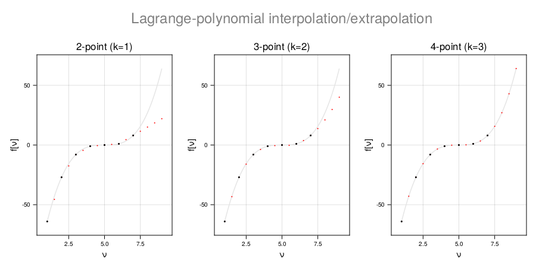

CamiXon.jl
A package for image analysis of backscattered light
Table of contents
Introduction
CamiXon is a package for the numerical solution of the radial Schrödinger equation allowing for screening.
In this package the solution is obtained for a single electron, acting as a spectator in the central field of the atomic nucleus screened by 'the other' electrons (the screening electrons).
The starting point is the 1D Schrödinger equation,
\[\tilde{χ}_{l}^{′′}+2[Z_{\mathrm{eff}}(ρ)/ρ-l(l+1)/2ρ^{2}+ε_{l}]\tilde{χ}_{l}=0,\]
where $\tilde{\chi}_{l}(\rho)=\rho\tilde{R}_{l}(\rho)$ is the reduced radial wavefunction and $ε_{l}=-κ _{l}^{2}$ is the corresponding binding energy in Hartree atomic units (a.u.). As compared to the hydrogenic case, the atomic number $Z$ has been replaced by $Z_{\mathrm{eff}}(ρ)$, the effective nuclear charge at radial distance $ρ$ from the atomic center (in a.u.). In other words, the energy of the electron in the Coulomb field of the nucleus is replaced by an effective, central field potential of the form
\[U_{\mathrm{CF}}(ρ)=-Z_{\mathrm{eff}}(ρ)/ρ=-Z/ρ+U_{\mathrm{scr}}(ρ),\]
consisting of the bare Coulomb contribution, $-Z/ρ$, and the screening field $U_{\mathrm{scr}}(ρ)$, subject to the boundary conditions $U_{\mathrm{scr}}(0)=Z$ and $\mathrm{lim}_{ρ→\infty}U_{\mathrm{scr}}(ρ)=Z_{c}/ρ$. Here $Z_{c}$ is the Rydberg charge; i.e. the effective nuclear charge for a spectator electron in the far field $(ρ→\infty)$. Within these assumptions we can optimize $U_{\mathrm{scr}}(ρ)$, while preserving the bare Coulomb field close to the nucleus as well as the Rydberg potential in the far field. The price we pay is that the radial Schrödinger equation has to be solved numerically by radial integration. Our strategy is to use both inward and outward integration and match the two branches by equating the two solutions for the wavefunction, $χ(ρ)$, and its derivative, $χ^′(ρ)$, at a point near the classical turning point of the radial motion of the electron. The basics of the solution can be found in the book Atomic Structure Theory by Walter R. Johnson.
Illustration: the hydrogen 3d orbital
Shown below are the reduced radial wavefunction $(χ)$ and its derivative $(χ^′)$ in the near field (left), the far field (right), and in the region near the classical turning point (center).

Codata
CamiXon.Codata — TypeCodataObject to hold the natural constants from CODATA. It is best created with the function castCodata
The fields are:
.∆νCs: Cs hyperfine transition frequency (::Value).c: speed of light in vacuum (::Value).h: Planck constant (::Value).ħ: Planck constant - reduced (::Value).e: elementary charge (::Value).kB: Boltzmann constant (::Value).NA: Avogadro constant (::Value).Kcd: Luminous efficacy (::Value).me: electron rest mass (::Value).R∞: Rydberg constant (::Value).Ry: Rydberg frequency (::Value).Eh: Hartree a.u. (::Value).α: fine-structure constant (::Value).μ0: magnetic permitivity of vacuum (::Value).ε0: electric permitivity of vacuum (::Value).KJ: Josephson constant (::Value).RK: Von Klitzing constant (::Value).R: Molar gas constant (::Value).matE: unit conversion matrix (Matrix{Float64})
Example:
codata = castCodata(2018)
codata.μ0
Value(1.2566370621250601e-6, "N A⁻²")
codata.μ0.val
1.2566370621250601e-6CamiXon.Value — TypeValue(val::Real, unit::String)Object to hold a real numerical value together with a unit specifier.
The fields are:
.val: numerical value (::Real).unit: unit specifier (::String)
Example:
f = Value(1,"Hz")
Value(1, "Hz")
f.val
1
f.unit
"Hz"CamiXon.strValue — MethodstrValue(f::Value)String expression for a Value object in :compact => true representation
Example:
f = Value(1,"Hz")
strValue(f)
"1 Hz"CamiXon.NamedValue — TypeNamedValue(val::Value, name::String, comment::String)Object to hold a Value together with its symbolic name and a short description
The fields are:
.val: Value (::Value).name: symbolic name (::String).comment: description (::String)
Named Value object The object NamedValue is best created using castNamedValue.
Example:
f = Value(1,"Hz")
Value(1, "Hz", "frequency")
f.name
"frequency"CamiXon.castNamedValue — MethodcastNamedValue(val::Value; name=" ", comment=" ")Method to create a NamedValue object
Example
v = Value(1.602176634e-19, "C")
nv = castNamedValue(v; name="e")
nv.name * " = " * strValue2(nv.val)
"e = 1.60218e-19 C"CamiXon.castCodata — MethodcastCodata(year::Int)Method to create the Codata object
Example:
codata = castCodata(2018)
strValue.([codata.∆νCs,codata.c,codata.h])
3-element Vector{String}:
"9192631770 Hz"
"299792458 m s⁻¹"
"6.62607e-34 J Hz⁻¹"CamiXon.listCodata — MethodlistCodata(codata::Codata)Method to list the fields of Codata by their symbolic name
Example:
codata = castCodata(2018)
listCodata(codata::Codata)
∆νCs = 9192631770 Hz
c = 299792458 m s⁻¹
h = 6.62607e-34 J Hz⁻¹
ħ = 1.05457e-34 J s
e = 1.60218e-19 C
kB = 1.38065e-23 J K⁻¹
NA = 6.02214e23 mol⁻¹
Kcd = 683 lm W⁻¹
mₑ = 9.10938e-31 Kg
R∞ = 1.09737e7 m⁻¹
Ry = 3.28984e15 Hz
Eₕ = 4.35974e-18 Hartree a.u.
α = 0.00729735
μ₀ = 1.25664e-6 N A⁻²
ε₀ = 8.85419e-12 F m⁻¹
KJ = 4.83598e14 Hz V⁻¹
RK = 25812.8 Ω
R = 8.31446 J mol⁻¹K⁻¹CamiXon.convertUnit — MethodconvertUnit(val, codata; unitIn="Hartree", unitOut="xHz")Unit conversion between μHz,⋯ EHz, Hartree, Rydberg, Joule, and eV
default input: Hartree
default output: xHz ∈ {μHz, mHz, Hz, kHz, MHz, GHz, THz, PHz, EHz}
Example:
codata = castCodata(2018)
convertUnit(1, codata; unitIn="Hz", unitOut="Joule")
6.62607015e-34
convertUnit(1, codata; unitIn="Hartree", unitOut="Hz")
Value(6.57968392050182e15, "Hz")
f = convertUnit(1, codata) # default input (Hartree) and output (xHz)
strf = strValue(f)
"6.57968 PHz"CamiXon.calibrationReport — MethodcalibrationReport(E, Ecal, codata::Codata; unitIn="Hartree")Comparison of energy E with calibration value Ecal
default input: Hartree
Example:
codata = castCodata(2018)
calibrationReport(1.1, 1.0, codata; unitIn="Hartree")
calibration report (Float64):
Ecal = 1.0 Hartree
E = 1.1 Hartree
absolute accuracy: ΔE = 0.1 Hartree (657.968 THz)
relative accuracy: ΔE/E = 0.0909091Atomic properties
CamiXon.Element — TypeElement(name, symbol, weight)Type with fields:
.name: name of element (::String).symbol: symbol of element (::String).weight: relative atomic mass - atomic weight (::Float64)
The type Element is best created with the function castElement.
CamiXon.Isotope — TypeIsotope(symbol, name, Z, A, N, R, M, I, π, T½, mdm, eqm, ra)Type with fields:
.symbol: symbol (::String).name: name (::String).Z: atomic number (::Int).A: atomic mass number in amu (::Int).N: neutron number (::Int).R: rms charge radius in Fermi (::Float64).M: atomic mass in amu (::Float64).I: nuclear spin in units of ħ (::Rational{Int}).π: parity of nuclear state (::Int).T½: lifetime in years (::Float64).mdm: nuclear magnetic dipole moment (::Float64).eqm: nuclear electric quadrupole moment (::Float64).ra: relative abundance in % (::Float64)
The type Isotope is best created with the function castIsotope.
CamiXon.Atom — TypeAtom(Z, A, Q, Zc, element, isotope)Type with fields:
.Z: atomic number (::Int).A: atomic mass number in amu (::Int).Q: ionic charge in a.u. (::Int).Zc: Rydberg charge in a.u. (::Int).element: (::Element).isotope: (::Isotope)
The type Atom is best created with the function castAtom.
CamiXon.Orbit — TypeOrbit(name, n, n′, ℓ)Type for specification of atomic orbitals with fields:
.name: name.n: principal quantum number.n′: radial quantum number (number of nodes in radial wavefunction).ℓ: orbital angular momentum valence electron
The type Orbit is best created with the function castOrbit.
CamiXon.SpinOrbit — TypeSpinOrbitType for specification of atomic spinorbitals with fields:
.name: name.n: principal quantum number.n′: radial quantum number (number of nodes in radial wavefunction).ℓ: orbital angular momentum valence electron.ms: spin magnetic quantum number
The type SpinOrbit is best created with the function createSpinOrbit.
CamiXon.Term — TypeTerm(name::String, n::Int, ℓ::Int, S::Real, L::Int, J::Real)Type for specification of atomic fine-structure Terms with fields:
name: name.n: principal quantum number.n′: radial quantum number (number of nodes in wavefunction).ℓ: orbital angular momentum valence electron.S: total electron spin in units of ħ.L: total orbital angular momentum in units of ħ.J: total electronic angular momentum in units of ħ
The type Term is best created with the function createTerm.
CamiXon.listElement — MethodlistElement(Z::Int[; fmt=Object])
listElement(elt::String[; fmt=Object])Properties of element with atomic number Z.
Output options: fmt = Object (default), String, Info.
Example:
listElement("H") == listElement(1)
true
listElement(1; fmt=Info)
Element: hydrogen
symbol: H
atomic number: Z = 1
atomic weight (relative atomic mass): 1.008CamiXon.listElements — MethodlistElements(Z1::Int, Z2::Int[; fmt=Object])Properties of elements with atomic number in the range Z1:Z2.
Output options: fmt = Object (default), String, Info.
Example
listElements(1,3) == listElements(1:3)
true
listElements(1:3; fmt=Info)
Element: hydrogen
symbol: H
atomic number: Z = 1
atomic weight (relative atomic mass): 1.008
Element: helium
symbol: He
atomic number: Z = 2
atomic weight (relative atomic mass): 4.0026
Element: lithium
symbol: Li
atomic number: Z = 3
atomic weight (relative atomic mass): 6.94CamiXon.castElement — MethodcastElement(;Z=1, msg=true)
castElement(elt::String; msg=true)Create Atom with fields
.name: name of element.symbol: symbol of element.weight: relative atomic mass (atomic weight)
Example:
castElement("Rb"; msg=false) == castElement(Z=37, msg=false)
true
element = castElement(;Z=1, msg=true)
element
Element created: H, hydrogen, Z=1, weight=1.008
Element("hydrogen", "H", 1.008)CamiXon.listIsotope — MethodlistIsotope(Z::Int, A::Int; fmt=Object)Properties of isotopes with atomic number Z and atomic mass number A.
Output options: fmt = Object (default), String, Latex, Info.
Example:
listIsotope(1,3; fmt=Info)
Isotope: tritium-3
symbol: ³T
element: tritium
atomic number: Z = 1
atomic mass number: A = 3
neutron number: N = 2
rms nuclear charge radius: R = 1.7591 fm
atomic mass: M = 3.016049281 amu
nuclear spin: I = 1/2 ħ
parity of nuclear state: π = even
nuclear magnetic dipole moment: μI = 2.97896246μN
nuclear electric quadrupole moment: Q = 0.0barn
relative abundance: RA = trace
lifetime: 12.33 yearsCamiXon.listIsotopes — MethodlistIsotopes(Z1::Int, Z2::Int; fmt=Object)All isotopes with atomic number from Z1 to Z2.
Output options: Object (default), String, Latex, Info.
Example:
listIsotopes(1,3) == listIsotopes(1:3)
true
listIsotopes(1:1; fmt=Info)
3-element Vector{Any}:
Isotope("¹H", "hydrogen", 1, 1, 0, 0.8783, 1.007825032, 1//2, 1, 1.0e100, 2.792847351, 0.0, 99.9855)
Isotope("²D", "deuterium", 1, 2, 1, 2.1421, 2.014101778, 1, 1, 1.0e100, 0.857438231, 0.0028578, 0.0145)
Isotope("³T", "tritium", 1, 3, 2, 1.7591, 3.016049281, 1//2, 1, 12.33, 2.97896246, 0.0, nothing)CamiXon.latexIsotopeTable — MethodlatexIsotopeTable(Z1::Int, Z2::Int; continuation=false)Isotope table for all isotopes with atomic number from Z1 to Z2.
Example:
latexIsotopeTable(1:3)
\setlength{\tabcolsep}{3pt}
\renewcommand{\arraystretch}{1.2}
\begin{table}[H]
\centering
\caption{\label{table:Isotopes-a-1}Properties of selected atomic isotopes. The Table is based on three databases: (a) AME2020 (atomic mass evaluation); (b) IAEA-INDC(NDS)-794 (magnetic dipole moments); (c) IAEA-INDC(NDS)-833 (electric quadrupole moments).}
\begin{tabular}{r|lr|rrrr|r|r|r|r}
\multicolumn{12}{r}\vspace{-18pt}\\
\hline
\hline
$Z$ & element & symbol & $A$ & $N$ & radius & atomic mass & $I\,^\pi$ & $\mu_I $ & $Q$ & $RA$\\& & & & & (fm) & $(m_u)$ & $(\hbar)\ \ $ & $(\mu_N)$ & (barn) & (\%)\\\hline
1 & hydrogen & $^{1}$H & 1\, & 0 & 0.8783 & 1.007825032 & 1/2$^+$ & 2.792847351 & 0.0 & 99.9855 \\
& & $^{2}$H & 2\, & 1 & 2.1421 & 2.014101778 & 1//1$^+$ & 0.857438231 & 0.0028578 & 0.0145 \\
& & $^{3}$H & 3$*\!\!$ & 2 & 1.7591 & 3.016049281 & 1/2$^+$ & 2.97896246 & 0.0 & trace \\
\hline
2 & helium & $^{3}$He & 3\, & 1 & 1.9661 & 3.016029322 & 1/2$^+$ & -2.12762531 & 0.0 & 0.0002 \\
& & $^{4}$He & 4\, & 2 & 1.6755 & 4.002603254 & 0//1$^+$ & 0.0 & 0.0 & 99.9998\% \\
\hline
3 & lithium & $^{6}$Li & 6\, & 3 & 2.589 & 6.015122887 & 1//1$^+$ & 0.822043 & -0.000806 & 4.85 \\
& & $^{7}$Li & 7\, & 4 & 2.444 & 7.016003434 & 3/2$^-$ & 3.256407 & -0.04 & 95.15 \\
\hline
\multicolumn{12}{l}{*radioactive }\\
\end{tabular}
\end{table}The typeset result is shown in the figule below.

CamiXon.castIsotope — MethodcastIsotope(;Z=1, A=1, msg=true)
castIsotope(elt::String; A=1, msg=true)Create Isotope with fields
.symbol: symbol (::String).name: symbol (::String).Z: atomic number (::Int).A: atomic mass number in amu (::Int).N: neutron number (::Int).R: rms charge radius in Fermi (::Float64).M: atomic mass in amu (::Float64).I: nuclear spin in units of ħ (::Rational{Int}).π: parity of nuclear state (::Int).ra: relative abundance in % (::Float64).mdm: nuclear magnetic dipole moment (::Float64).eqm: nuclear electric quadrupole moment (::Float64).T½: lifetime in years (::Float64)
Examples:
castIsotope("Rb"; A=87, msg=false) == castIsotope(Z=37, A=87, msg=false)
true
isotope = castIsotope(Z=1, A=3, msg=false)
Isotope("³T", "tritium", 1, 3, 2, 1.7591, 3.016049281, 1//2, 1, 12.33, 2.97896246, 0, nothing)
isotope.T½
12.33
castIsotope(Z=1,A=3);
Isotope created: tritium-3
symbol: ³T
element: tritium
atomic number: Z = 1
atomic mass number: A = 3
neutron number: N = 2
rms nuclear charge radius: R = 1.7591 fm
atomic mass: M = 3.016049281 amu
nuclear spin: I = 1/2 ħ
parity of nuclear state: π = ⁺
nuclear magnetic dipole moment: μI = 2.97896246μN
nuclear electric quadrupole moment: Q = 0.0barn
relative abundance: RA = trace
lifetime: 12.33 yearsCamiXon.listAtom — MethodlistAtom(Z::Int, A::Int, Q::Int[; fmt=Object])Properties of atom with atomic number Z, atomic mass number A, ionic charge Q.
Output options: fmt = Object (default), String, Info.
Example:
listAtom("H", 3, 0) == listAtom(1, 3, 0)
true
listAtom(1, 3, 0; fmt=Info)
Element: hydrogen
symbol: H
element: tritium
atomic number: Z = 1
atomic weight (relative atomic mass): 1.008CamiXon.listAtoms — MethodlistAtoms(Z1::Int, Z2::Int, Q::Int[; fmt=Object])Properties of atoms with atomic number in the range Z1:Z3 and ionic charge Q.
Output options: fmt = Object (default), String, Info.
Example
listAtoms(1,3,0) == listAtoms(1:3,0)
true
listAtoms(1:1, 0; fmt=Info);
Atom: hydrogen, neutral atom
symbol: ¹H
atomic charge: Z = 1
Rydberg charge: Zc = 1
Atom: deuterium, neutral atom
symbol: ²D
atomic charge: Z = 1
Rydberg charge: Zc = 1
Atom: tritium, neutral atom
symbol: ³T
atomic charge: Z = 1
Rydberg charge: Zc = 1CamiXon.castAtom — MethodcastAtom(;Z=1, A=1, Q=0, msg=true)
castAtom(elt::String; A=1, Q=0, msg=true)Create Atom with fields:
.Z: atomic number (::Int).A: atomic mass number in amu (::Int).Q: ionic charge in a.u. (::Int).Zc: Rydberg charge in a.u. (::Int).element: (::Element).isotope: (::Isotope)
Examples:
castAtom("Rb"; A=87, Q=0, msg=false) == castAtom(Z=37, A=87, Q=0, msg=false)
true
castAtom(Z=1, A=3, Q=0, msg=false)
Atom(1, 3, 0, 1, Element("hydrogen", "H", 1.008), Isotope("³T", "tritium",
1, 3, 2, 1.7591, 3.016049281, 1//2, 1, 12.33, 2.97896246, 0.0, nothing))
atom = castAtom(Z=1, A=3, Q=0, msg=true);
Element created: H, hydrogen, Z=1, weight=1.008
Isotope created: ³T, tritium, Z=1, A=3, N=2, R=1.7591, M=3.016049281, I=1/2⁺, μI=2.97896246, Q=0.0, RA=trace, (radioactive)
Atom created: tritium, neutral atom, ³T, Z=1, A=3, Q=0, Zc=1
atom
Atom(1, 3, 0, 1, Element("hydrogen", "H", 1.008), Isotope("³T", "tritium",
1, 3, 2, 1.7591, 3.016049281, 1//2, 1, 12.33, 2.97896246, 0.0, nothing))
atom.isotope.T½
12.33CamiXon.castOrbit — MethodcastOrbit(;n=1, ℓ=0, msg=true)Create Orbit with fields:
.name: name.n: principal quantum number.n′: radial quantum number (number of nodes in radial wavefunction).ℓ: orbital angular momentum valence electron
Examples:
castOrbit(n=1, ℓ=0)
Orbit created: 1s (n = 1, n′ = 0, ℓ = 0)
Orbit("1s", 1, 0, 0)CamiXon.createSpinOrbit — MethodcreateSpinOrbital(o::Orbit; up=true, msg=true)Specify SpinOrbit with fields:
.name: name.n: principal quantum number.n′: radial quantum number (number of nodes in radial wavefunction).ℓ: orbital angular momentum valence electron.ms: spin magnetic quantum number
Examples:
s1s = castOrbit(1,0)
createSpinOrbit(s1s; up=true)
SpinOrbit created: 1s↑ (n = 1, n′ = 0, ℓ = 0, ms = 1//2)
SpinOrbit("1s↑", 1, 0, 0, 1//2)CamiXon.createTerm — MethodcreateTerm(n::Int; ℓ=0, S=1//2, L=0, J=1//2, msg=true)Specify Term in the Term notatation with fields:
.n: principal quantum number.n′: radial quantum number (number of nodes - autogenerated).ℓ: orbital angular momentum valence electron.S: total electron spin.L: total orbital angular momentum.J: total electronic angular momentum
Examples:
term_H1I = createTerm(1; ℓ=0, S=1//2, L=0, J=1//2)
Term created: 1s ²S₁⸝₂, n = 1, n′ = 0, ℓ = 0, S = 1//2, L = 0, J = 1//2
Term("1s ²S₁⸝₂", 1, 0, 0, 1//2, 0, 1//2)Hydrogen
CamiXon.bohrformula — Methodbohrformula(Z::Int, n::Int)Hydrogenic energy (in Hartree a.u.) for atom with atomic number Z and principal quantum number n.
\[ E_n = - \frac{Z^2}{2n^2}\]
Example:
Z = 2
n = 4
bohrformula(Z,n)
-0.125CamiXon.hydrogenic_reduced_wavefunction — Methodhydrogenic_reduced_wavefunction(atom::Atom, orbit::Orbit, grid::Grid, def::Def)Analytic expression for the hydrogenic wavefunction written in the format $Z = \tilde{χ} + i \tilde{χ}^′$, where $\tilde{χ}_{nℓ}(ρ)$ is the reduced radial wavefunction and $\tilde{χ}^′_{nℓ}(ρ)$ its derivative, with $ρ$ the radial distance to the nucleus in a.u.. The expression is evaluated for a given Atom in a given Orbit on a given Grid. The argument Def completes the definition of the problem.
\[ \tilde{\chi}_{nl}(\rho) =\mathcal{N}_{nl}^{-1/2}(2Z/n)^{l+3/2}\rho^{l+1}e^{-Zρ/n} L_{n-l-1}^{2l+1}(2Z\rho/n)\]
where $L_{n-l-1}^{2l+1}(2Z\rho/n)$ is the generalized Laguerre polynomial generalized_laguerreL and
\[ \mathcal{N}_{nl} = {\displaystyle \int\nolimits _{0}^{\infty}}x^{2l+2}e^{-x} \left[L_{n-l-1}^{2l+1}(x)\right]^{2}dx = \frac{2n\Gamma(n+l+1)}{\Gamma(n-l)}\]
is the norm of the wavefunction.
Example:
atom = castAtom(Z=1, A=1, Q=0)
orbit = castOrbit(n=25, ℓ=10)
grid = autoGrid(atom, orbit, Float64; Nboost=1, msg=true)
def = castDef(grid, atom, orbit, codata)
Z = hydrogenic_reduced_wavefunction(atom, orbit, grid, def);
Element created: H, hydrogen, Z=1, weight=1.008
Isotope created: ¹H, hydrogen, Z=1, A=1, N=0, R=0.8783, M=1.007825032, I=1/2⁺, μI=2.792847351, Q=0.0, RA=99.9855%, (stable)
Atom created: hydrogen, neutral atom, ¹H, Z=1, A=1, Q=0, Zc=1
Orbital: 25n
principal quantum number: n = 25
radial quantum number: n′ = 14 (number of nodes in radial wavefunction)
orbital angular momentum of valence electron: ℓ = 10
Grid created: exponential, Float64, Rmax = 1935.0 a.u., Ntot = 1300, h = 0.00769231, r0 = 0.0878529
Def created for hydrogen 25n on exponential grid of 1300 points
plot_wavefunction(Z, 1:grid.N, grid, def)The plot is made using CairomMakie. NB.: plot_wavefunction is not included in the CamiXon package. 
CamiXon.reduce_wavefunction — Methodreduce_wavefunction(Z::Vector{Complex{T}}, grid::Grid{V}) where {T<:Real, V<:Real}Conversion from the ordinary radial wavefunction $\tilde{R}_{nl}(ρ)$ to the reduced radial wavefuntion
\[ \tilde{\chi}_{nl}(ρ) = ρ \tilde{R}_{nl}(ρ).\]
where $ρ$ is the radial distance to the nucleus in a.u..
Example:
atom = castAtom(Z=1, A=1, Q=0; msg=false);
orbit = castOrbit(n=1, ℓ=0; msg=false);
grid = autoGrid(atom, orbit, Float64; Nboost=1, msg=false);
def = castDef(grid, atom, orbit, codata);
RH1s_example = [RH1s(atom.Z, grid.r[n]) for n=1:grid.N];
XH1s_generic = hydrogenic_reduced_wavefunction(atom, orbit, grid, def);
XH1s_example = reduce_wavefunction(RH1s_example);
RH1s_generic = restore_wavefunction(XH1s_generic);
XH1s_example ≈ XH1s_generic
true
RH1s_example ≈ RH1s_generic
trueCamiXon.restore_wavefunction — Methodrestore_wavefunction(Z::Vector{Complex{T}}, grid::Grid{V}) where {T<:Real, V<:Real}Conversion from the reduced radial wavefunction $\tilde{\chi}_{nl}(ρ)$ to the ordinary radial wavefuntion $\tilde{R}_{nl}(ρ)$,
\[ \tilde{R}_{nl}(ρ)=\tilde{\chi}_{nl}(ρ)/ρ,\]
where $ρ$ is the radial distance to the nucleus in a.u..
Example:
atom = castAtom(Z=1, A=1, Q=0; msg=false);
orbit = castOrbit(n=1, ℓ=0; msg=false);
grid = autoGrid(atom, orbit, Float64; Nboost=1, msg=false);
def = castDef(grid, atom, orbit, codata);
RH1s_example = [RH1s(atom.Z, grid.r[n]) for n=1:grid.N];
XH1s_generic = hydrogenic_reduced_wavefunction(atom, orbit, grid, def);
XH1s_example = reduce_wavefunction(RH1s_example);
RH1s_generic = restore_wavefunction(XH1s_generic);
RH1s_example ≈ RH1s_generic
true
XH1s_example ≈ XH1s_generic
true
f1 = real(XH1s_example)
f2 = real(XH1s_generic)
compare_functions(f1, f2, 1:grid.N, grid)The plot is made using CairomMakie. NB.: compare_functions is not included in the CamiXon package. 
CamiXon.demo_hydrogen — Methoddemo_hydrogen(; n=3, ℓ=2, codata=castCodata(2018))Solves Schrödinger equation for hydrogen atom with principal quantum number n and rotational quantum number ℓ.
Example:
Ecal, grid, def, adams = demo_hydrogen(n=1, ℓ=0);
Def created for hydrogen 1s on exponential grid of 100 points
E = 1.5Ecal
E, def, adams, Z = adams_moulton_master(E, grid, def, adams; Δν=Value(1,"kHz"), imax=25, msg=true);
plot_wavefunction(Z, 1:def.pos.N, grid, def; reduced=false)The plot is made using CairomMakie. Note the discontinuity in the derivative. NB.: plot_wavefunction is not included in the CamiXon package. 
Some special cases
CamiXon.RH1s — MethodRH1s(Z::U, r::T) where {U <: Real, T <:Real}Analytic expression for the hydrogenic 1s radial wavefunction and its derivative in the format $Z = \tilde{R} + i \tilde{R}^′$, where
\[ \tilde{R}_{1s}(ρ) = Z^{3/2} 2 e^{-Zρ}\]
is the radial wavefunction and
\[ \tilde{R}^′_{1s}(ρ) = -Z^{5/2} 2 e^{-Zρ}\]
its derivative, with $ρ$ the radial distance to the nucleus in a.u..
Example:
atom = castAtom(Z=1, A=1, Q=0; msg=false);
orbit = castOrbit(n=1, ℓ=0; msg=false);
grid = autoGrid(atom, orbit, Float64; Nboost=1, msg=false);
def = castDef(grid, atom, orbit, codata);
RH1s_example = [RH1s(atom.Z, grid.r[n]) for n=1:grid.N];
plot_wavefunction(RH1s_example, 1:grid.N, grid, def; reduced=false)The plot is made using CairomMakie. NB.: plot_function is not included in the CamiXon package. 
CamiXon.RH2p — MethodRH2p(Z::U, r::T) where {U <: Real, T <:Real}Analytic expression for the hydrogenic 1s reduced radial wavefunction and its derivative in the format $Z = \tilde{R} + i \tilde{R}^′$, where
\[ \tilde{R}_{2p}(ρ)=\left(Z/2\right)^{3/2}\sqrt{1/3}(Zρ/2)2e^{-Zρ/2}\]
is the radial wavefunction and
\[ \tilde{R}_{2p}(ρ)=\left(Z/2\right)^{3/2}\sqrt{1/3}(1-Zρ/2)2e^{-Zρ/2}\]
its derivative, with $ρ$ the radial distance to the nucleus in a.u..
Example:
atom = castAtom(Z=1, A=1, Q=0; msg=false);
orbit = castOrbit(n=2, ℓ=1; msg=false);
grid = autoGrid(atom, orbit, Float64; Nboost=1, msg=false);
def = castDef(grid, atom, orbit, codata);
RH2p_example = [RH2p(atom.Z, grid.r[n]) for n=1:grid.N];
plot_wavefunction(RH2p_example, 1:grid.N, grid, def; reduced=false)The plot is made using CairomMakie. NB.: plot_wavefunction is not included in the CamiXon package. 
Angular momentum
Vector-coupling coefficients
CamiXon.threeJsymbol — MethodthreeJsymbol(j1::Real, m1::Real, j2::Real, m2::Real, j3::Real, m3::Real; msg=false)Wigner 3j symbol. This is a vector coupling coefficient with optimized symmetry properties. The 3j symbols are zero unless $Δ(j_{1},j_{2},j_{3})>0$ (triangle inequality holds) and $m_{1}+m_{2}+m_{3}=0$. The implementation is based on the Racah formula:
\[\left(\begin{array}{ccc} j_{1} & j_{2} & j_{3}\\ m_{1} & m_{2} & m_{3} \end{array}\right)= (-1)^{j_{1}-j_{2}-m_{3}}\sqrt{\Delta(j_{1}j_{2}J)}\\\times \sqrt{\left(j_{1}+m_{1}\right)! \left(j_{1}-m_{1}\right)! \left(j_{2}+m_{2}\right)! \left(j_{2}-m_{2}\right)! \left(j_{3}+m_{3}\right)! \left(j_{3}-m_{3}\right)!} \\\times\sum_{t}\frac{(-)^{t}}{t!(j_{3}-j_{2}+t+m_{1})! (j_{3}-j_{1}+t-m_{2})! (j_{1}+j_{2}-j_{3}-t)!(j_{1}-t-m_{1})!(j_{2}-t+m_{2})!}\]
Example:
o = threeJsymbol(3, 0, 4, -1, 5, 1; msg=true); println(" = $o")
-√(361/30030) = -0.10964174397241236
threeJsymbol(3, 0, 4, -1, 5, 1)
-0.10964174397241236
threeJsymbol(0, 0, 0, 0, 0, 0)
1.0CamiXon.CGC — MethodCGC(j1::Real, m1::Real, j2::Real, m2::Real, J::Real, M::Real; msg=false)Clebsch-Gordan coefficient (CGC). This is a vector-coupling coefficient in Dirac notation. The CGCs are zero unless $Δ(j_{1},j_{2},j_{3})>0$ (triangle inequality holds) and $M=m_{1}+m_{2}$. The relation to the Wigner 3j symbols is given by:
\[\langle j_{1}m_{1};j_{2}m_{2}|JM\rangle\equiv (-1)^{j_{1}-j_{2}+M}\sqrt{2J+1}\left(\begin{array}{ccc} j_{1} & j_{2} & J\\ m_{1} & m_{2} & -M \end{array}\right)\]
Example:
j1=3; m1=0
j2=4; m2=-1
J=5; M=-1
o = CGC(j1, m1, j2, m2, J, M; msg=true); println(" = $o")
o = CGC(j1, m1, j2, m2, J, M); println(o)
o = (-1)^(j1-j2+M) * sqrt(2J+1) * threeJsymbol(j1, m1, j2, m2, J, -M); println(o)
-√(361/2730) = -0.36364052611670256
-0.36364052611670256
-0.36364052611670256Grid
The Grid object is the backbone for the numerical procedure on a non-uniform grid. Its principal fields are grid.r and grid.r′, which are discrete functions of N elements representing the grid function and its derivative.
CamiXon.Grid — TypeGrid(ID, name, T, N, r, r′, h, r0, epn, epw, k)Type with fields:
.ID: grid identifer name (::Int).name: grid identifer name (::String).T: gridType (::Type).N: number of grid points (::Int).r: tabulated grid function (::Vector{T}).r′: tabulated derivative of grid function (::Vector{T}).h: grid step multiplyer (::T).r0: grid scale factor (::T).epn: number of endpoints used for trapezoidal endpoint correction (must be odd) (::Int).epw: trapezoidal endpoint weights for n=1:epn (::Vector{Vector{T}}).k: Adams-Moulton order (::Int)
The object Grid is best created with the function castGrid.
CamiXon.gridname — Methodgridname(ID::Int)Name corresponding to the grid ID.
Example:
n = gridname(2); println("The grid type with ID = 2 is called '$n'.")
The grid type with ID = 2 is called 'quasi-exponential'.CamiXon.gridfunction — Methodgridfunction(ID::Int, n::Int, h::T; p=5, coords=[0,1], deriv=0) where T <: RealID = 1: exponential grid function,
\[ f[n] = \text{exp}(h(n-1)) - 1.0\]
ID = 2: quasi-exponential grid function degreep(linear grid forp = 1),
\[ f[n] = h(n-1) + \frac{1}{2}(h(n-1))^2 + ⋯ + \frac{1}{p!}(h(n-1))^p\]
ID = 3: linear grid function,
\[ f[n] = h(n-1)\]
ID = 4: polynomial grid function of degreep = length(c)based onpolynom$c = [c_1,c_2,⋯\ c_p]$,
\[ f[n] = c_1h(n-1) + c_2(h(n-1))^2 + ⋯ + c_p(h(n-1))^p\]
Examples:
h = 0.1
r = [gridfunction(1, n-1, h) for n=1:5] # exponential
[0.0, 0.10517091807564771, 0.22140275816016985, 0.3498588075760032, 0.49182469764127035]
r = [gridfunction(2, n-1, h; p = 4) for n=1:5] # quasi exponential (degree p=4)
[0.0, 0.10517083333333321, 0.22140000000000004, 0.3498375, 0.49173333333333336]
r = [gridfunction(3, n-1, h) for n=1:5] # linear
[0.0, 0.1, 0.2, 0.3, 0.4]
r′= [gridfunction(3, n-1, h; deriv=1) for n=1:5] # linear (first derivative)
[0.1, 0.1, 0.1, 0.1, 0.1]
r = [gridfunction(4, n-1, h; coords = [0,1,1/2,1/6,1/24]) for n=1:5] # polynomial of degree 4)
[0.0, 0.10517083333333334, 0.2214, 0.3498375000000001, 0.49173333333333336]CamiXon.castGrid — MethodcastGrid(ID::Int, N::Int, T::Type; h=1, r0=1, p=5, coords=[0,1], epn=5, k=7, msg=true)Method to create the Grid object
ID = 1: exponential grid, ID = 2: quasi-exponential grid, ID = 3: linear grid ID = 4: polynomial grid
Examples:
h = 0.1
r0 = 1.0
grid = castGrid(1, 4, Float64; h, r0)
grid.r
create exponential Grid: Float64, Rmax = 0.491825 a.u., Ntot = 4, h = 0.1, r0 = 1.0
[0.0, 0.10517091807564771, 0.22140275816016985, 0.3498588075760032]
grid = castGrid(2, 4, Float64; p = 4, h, r0)
grid.r
create quasi-exponential Grid: Float64, Rmax = 0.491733 a.u., Ntot = 4, p = 4, h = 0.1, r0 = 1.0
[0.0, 0.10517083333333321, 0.22140000000000004, 0.3498375]
grid = castGrid(3, 4, Float64; coords=[0, 1, 1/2, 1/6, 1/24], h, r0)
grid.r
create polynomial Grid: Float64, Rmax = 0.491733 a.u., Ntot = 4, coords = [0.0, 1.0, 0.5, 0.166666, 0.0416666], h = 0.1, r0 = 1.0
[0.0, 0.10517083333333334, 0.2214, 0.3498375000000001]
grid = castGrid(4, 4, Float64; h, r0)
grid.r
create linear Grid: Float64, Rmax = 0.4 a.u., Ntot = 4, p = 1, h = 0.1, r0 = 1.0
[0.0, 0.1, 0.2, 0.3]
grid.r′
[0.1, 0.1, 0.1, 0.1]CamiXon.findIndex — MethodfindIndex(rval::T, grid::Grid{T}) where T<:NumberThe grid index corresponding to the position rval on the grid.
Example:
h = 0.1
r0 = 1.0
grid = castGrid(1, 4, Float64; h, r0)
r = grid.r; println("r[3] = $(r[3])")
Grid created: exponential, Float64, Rmax = 0.491825 a.u., Ntot = 4, h = 0.1, r0 = 1.0
r[3] = 0.22140275816016985
findIndex(0.222, grid)
3CamiXon.autoRmax — MethodautoRmax(atom::Atom, orbit::Orbit)Largest relevant radial distance in a.u. (rule of thumb value)
Example:
codata = castCodata(2018)
atom = castAtom(Z=1, A=1, Q=0)
orbit = castOrbit(n=1, ℓ=0)
rmax = autoRmax(atom::Atom, orbit::Orbit); println("rmax = $(rmax) a.u.")
Element created: H, hydrogen, Z=1, weight=1.008
Isotope created: ¹H, hydrogen, Z=1, A=1, N=0, R=0.8783, M=1.007825032, I=1/2⁺, μI=2.792847351, Q=0.0, RA=99.9855%, (stable)
Atom created: hydrogen, neutral atom, ¹H, Z=1, A=1, Q=0, Zc=1
Orbital: 1s
principal quantum number: n = 1
radial quantum number: n′ = 0 (number of nodes in radial wavefunction)
orbital angular momentum of valence electron: ℓ = 0
rmax = 63.0 a.u.CamiXon.autoNtot — MethodautoNtot(orbit::Orbit, Nboost=1)Total number of gridpoints (rule of thumb value)
Example:
orbit = castOrbit(n=1, ℓ=0)
autoNtot(orbit)
Orbit created: 1s - (n = 1, n′ = 0, ℓ = 0)
100CamiXon.autoPrecision — MethodautoPrecision(Rmax::T, orbit::Orbit) where T<:RealFloating point precision (rule of thumb value)
Example:
atom = castAtom(Z=1)
orbit = castOrbit(n=1,ℓ=0)
Rmax = autoRmax(atom, orbit)
o = autoPrecision(Rmax, orbit); println("precision = $o")
Element created: H, hydrogen, Z=1, weight=1.008
Isotope created: ¹H, hydrogen, Z=1, A=1, N=0, R=0.8783, M=1.007825032, I=1/2⁺, μI=2.792847351, Q=0.0, RA=99.9855%, (stable)
Atom created: hydrogen, neutral atom, ¹H, Z=1, A=1, Q=0, Zc=1
Orbital: 1s
principal quantum number: n = 1
radial quantum number: n′ = 0 (number of nodes in radial wavefunction)
orbital angular momentum of valence electron: ℓ = 0
precision = Float64CamiXon.autoSteps — MethodautoSteps(ID::Int, Ntot::Int, Rmax::T; p=5) where T<:Real
autoSteps(ID::Int, Ntot::Int, Rmax::T; coords=[0,1]) where T<:RealStep size parameter (h) and range parameter (r0) (rule of thumb values).
Example:
(h, r0) = autoSteps(1, 100, 100)
(0.1, 0.004540199100968777)CamiXon.autoGrid — MethodautoGrid(atom, orbit, T; Nboost=1, epn=5, k=7, msg=true, p=0)
autoGrid(atom, orbits, T; Nboost=1, epn=5, k=7, msg=true, p=0)
autoGrid(atom, orbit, T; Nboost=1, epn=5, k=7, msg=true, coords=[])
autoGrid(atom, orbits, T; Nboost=1, epn=5, k=7, msg=true, coords=[])Automatic setting of grid parameters for a given orbit Orbit or an array of orbits - orbits = [orbit1, orbit2, ⋯]. Important cases:
p == 0(exponential radial grid)p == 1(linear radial grid)p > 1(quasi-exponential radial grid)coords=[](free polynomial grid based on thecoords)
Example:
codata = castCodata(2018)
atom = castAtom(;Z=1, A=1, Q=0, msg=false)
orbit = castOrbit(n=75, ℓ=0, msg=false)
grid = autoGrid(atom, orbit, Float64);
Grid created: exponential, Float64, Rmax = 16935.0 a.u., Ntot = 3800, h = 0.00263158, r0 = 0.768883
plot_gridfunction(grid, 1:grid.N; title="")The plot is made using CairomMakie. NB.: plot_gridfunction is not part of the CamiXon package. 
CamiXon.grid_differentiation — Methodgrid_differentiation(f::Vector{T}, grid::Grid{T}; k=3) where T<:Real$k^{th}$-order lagrangian differentiation of the analytic function $f$, tabulated in forward order on a Grid of $n$ points, $f[1:n]$.
Example:
ID = 4 # linear grid
f = [0.0, 1.0, 4.0, 9.0, 16.0, 25.0]
grid = castGrid(ID, length(f), Float64; r0=1.0, h=1.0, k=3) # linear grid
f′= grid_differentiation(f, grid; k=3); println("f′= $(f′)")
Grid created: linear, Float64, Rmax = 6.0 a.u., Ntot = 6, p = 1, h = 1.0, r0 = 1.0
f′= [0.0, 2.0, 4.0, 6.0, 7.999999999999998, 9.999999999999993]CamiXon.grid_integration — Methodgrid_integration(f::Vector{T}, n1::Int, n2::Int, grid::Grid{V}) where {T<:Real, V<:Real}Integral of the function $f=[f_0,⋯\ f_n]$ tabulated on a Grid using the trapezoidal rule optimized with endpoint correction by the weightsvector grid.epw,
\[ ∫_{0}^{r_n} f(r) dr = ∫_{0}^{n} f(x) r^{\prime}(x) dx,\]
where the latter integral corresponds to the optimized trapezoidal rule for a uniform grid (see trapezoidal_integration). The rule is exact for polynonials of degree $d=0,\ 1,⋯\ k-1$, where $k=$ grid.epn. For $k=1$ the rule reduces to the ordinary trapezoidal rule (weights = [1/2]).
Example:
f1s(r) = 2.0*r*exp(-r); # hydrogen 1s wavefunction (reduced and unit normalized)
N = 1000;
grid = castGrid(1, N, Float64; h=0.01, r0=0.005)
create exponential Grid: Float64, Rmax = 110.127 (a.u.), Ntot = 1000, h = 0.01, r0 = 0.005
r = grid.r;
f2 = [f1s(r[n])^2 for n=1:N];
grid_integration(f2, 1:N, grid) == grid_integration(f2, 1, N, grid)
true
norm = grid_integration(f2, 1:N, grid)
1.0Adams-Moulton integration
The Adams-Moulton method is used for numerical integration of the reduces radial wave equation. In the present implementation it is constructed on top the objects Atom, Orbit, Grid, Def and Adams using 5 globally defined instances called atom, orbit, grid, def and adams.
Def
The Def object serves to define the problem to be solved and to contain in the field def.Z the solution as a discrete function of N elements.
Illustration: central field potential $U_{\mathrm{CF}}$ versus grid index
codata = castCodata(2018)
atom = castAtom(Z=1, A=1, Q=0)
orbit = castOrbit(n=7, ℓ=2)
grid = autoGrid(atom, orbit, Float64)
def = castDef(grid, atom, orbit, codata)
E = convert(grid.T,bohrformula(atom.Z, orbit.n))
adams = castAdams(E, grid, def)
@printf "E = %.15g %s \n" E "Hartree"
Element created: H, hydrogen, Z=1, weight=1.008
Isotope created: ¹H, hydrogen, Z=1, A=1, N=0, R=0.8783, M=1.007825032, I=1/2⁺, μI=2.792847351, Q=0.0, RA=99.9855%, (stable)
Atom created: hydrogen, neutral atom, ¹H, Z=1, A=1, Q=0, Zc=1
Orbital: 7d
principal quantum number: n = 7
radial quantum number: n′ = 4 (number of nodes in radial wavefunction)
orbital angular momentum of valence electron: ℓ = 2
Grid created: exponential, Float64, Rmax = 207.0 a.u., Ntot = 400, h = 0.025, r0 = 0.00939821
Def created for hydrogen 7d on exponential grid of 400 points
E = -0.0102040816326531 Hartree
plot_potentials(E, grid, def)
Nlctp = 234, Nmin = 259, Nuctp = 369 (Ructp = 93.0059202490 a.u.)The plot is made using CairomMakie. NB.: plot_potentials is not included in the CamiXon package. 
CamiXon.Def — TypeDef(T, atom, orbit, pot, scr, o1, o2, o3, pos, epn, k, am, matLD)Type with fields:
.T: gridType (::Type).atom: atom object (::Atom).orbit: orbit object (::Orbit).codata: codata object (::Codata).pot: tabulated potential function (::Vector{T}).scr: tabulated screening function (::Vector{T}).o1: vector of zero-filled matrices (::Vector{Matrix{T}}).o2: vector of zero-filled matrices (::Vector{Matrix{T}}).o3: vector of unit-filled matrices (::Vector{Matrix{T}}).pos: object containing Na, Nlctp, Nmin, Nuctp, Nb, N and nodes (::Pos).epn: number of endpoints trapezoidal correction - must be odd (::Int).k: Adams-Moulton order (::Int).am: Adams-Moulton weight coefficients (::Vector{T}).matLD: Lagrangian differentiation matrix (::Matrix{T})
The object Def is best created with the function castDef.
CamiXon.castDef — MethodcastDef(grid::Grid{T}, atom::Atom, orbit::Orbit, codata::Codata[; scr=nothing[, msg=true]]) where T <: RealCreate the Def object starting from the Grid object and the atomic properties of the objects Atom and Orbit. Optional: scr (supply screening array)
Example:
codata = castCodata(2018)
atom = castAtom(Z=1, A=1, Q=0)
orbit = castOrbit(n=7, ℓ=2)
grid = autoGrid(atom, orbit, Float64)
def = castDef(grid, atom, orbit, codata);
Element created: H, hydrogen, Z=1, weight=1.008
Isotope created: ¹H, hydrogen, Z=1, A=1, N=0, R=0.8783, M=1.007825032, I=1/2⁺, μI=2.792847351, Q=0.0, RA=99.9855%, (stable)
Atom created: hydrogen, neutral atom, ¹H, Z=1, A=1, Q=0, Zc=1
Orbital: 7d
principal quantum number: n = 7
radial quantum number: n′ = 4 (number of nodes in radial wavefunction)
orbital angular momentum of valence electron: ℓ = 2
Grid created: exponential, Float64, Rmax = 207.0 a.u., Ntot = 400, h = 0.025, r0 = 0.00939821
Def created for hydrogen 7d on exponential grid of 400 pointsPos and Pos-related functions
The Pos object serves within Def object to contain the position indices def.Na, def.Nb, def.Nlctp, def.Nmin, def.Nuctp used in Adams-Moulton integration. These positions are contained in the fields def.pos.Na, def.pos.Nb, def.pos.Nlctp, def.pos.Nmin, def.pos.Nuctp. Alternatively, they can be determined with the functions get_Na, get_Nb, get_Nlctp, get_Nmin, get_Nuctp.
CamiXon.Pos — TypePos(Na::Int, Nlctp::Int, Nmin::Int, Nuctp::Int, Nb::Int, N::Int, nodes::Int, cWKB::Float64)Type with fields:
.Na: grid index of last leading point (::Int).Nlctp: grid index of lower classical turning point (::Int).Nmin: grid index of (screened) potential minimum (::Int).Nuctp: grid index of upper classical turning point (::Int).Nb: grid index first trailing point (::Int).N: grid index last point (::Int).nodes: number of nodes (::Int).cWKB: WKB threshold level determining Na and Nb (::Float64)
Mutable struct to hold special grid indices as well as the number of nodes; Pos is one of the fields of the Def object
Examples:
pos = Pos(1, 2, 3, 4, 5, 6, 7, 8)
pos.Nuctp
4
pos.Nuctp = 8
pos
Pos(1, 2, 3, 9, 5, 6, 7, 8)CamiXon.get_Na — Methodget_Na(Z::Vector{Complex{T}}, def::Def{T}) where T<:RealGrid index of the starting point for outward numerical integration. This is k+1 or the point marking the end of the quasiclassical region below the lower classical turning point (lctp) as marked by the WKB threshold value (def.pos.cWKB).
Example:
Ecal, grid, def, adams = demo_hydrogen(n=1, ℓ=0)
E, def, adams, Z = adams_moulton_master(E, codata, grid, def, adams; Δν=Value(1,"kHz"), imax=25, msg=false);
Orbital: 1s
principal quantum number: n = 1
radial quantum number: n′ = 0 (number of nodes in radial wavefunction)
orbital angular momentum of valence electron: ℓ = 0
Grid created: exponential, Float64, Rmax = 63.0 a.u., Ntot = 100, h = 0.1, r0 = 0.00286033
Def created for hydrogen 1s on exponential grid
Na = get_Na(Z, def)
println("k + 1 = $(grid.k+1); Na = $Na")
k + 1 = 8; Na = 8
Na == def.pos.Na
trueCamiXon.get_Nb — Methodget_Nb(Z::Vector{Complex{T}}, def::Def{T}) where T<:RealGrid index of the stopping for outward numerical integration. This is N-k-1 or the point marking the start of the quasiclassical region above the upper classical turning point (Nuctp) as marked by the WKB threshold value (def.pos.cWKB).
Example:
Ecal, grid, def, adams = demo_hydrogen(n=1, ℓ=0)
E, def, adams, Z = adams_moulton_master(E, codata, grid, def, adams; Δν=Value(1,"kHz"), imax=25, msg=false);
Orbital: 1s
principal quantum number: n = 1
radial quantum number: n′ = 0 (number of nodes in radial wavefunction)
orbital angular momentum of valence electron: ℓ = 0
Grid created: exponential, Float64, Rmax = 63.0 a.u., Ntot = 100, h = 0.1, r0 = 0.00286033
Def created for hydrogen 1s on exponential grid
Nb = get_Nb(Z, def)
println("N - k - 1 = $(grid.N-grid.k-1); Nb = $Nb")
N - k - 1 = 92; Nb = 92
Nb == def.pos.Nb
trueCamiXon.get_Nlctp — Methodget_Nlctp(E::T, def::Def{T}) where T<:RealGrid index of the *lower classical turning point * of the screened potential curve. By definition get_Nlctp(E, def) = 2 for zero orbital angular momentum (ℓ=0).
CamiXon.get_Nmin — Methodget_Nmin(def::Def{T}) where T<:RealGrid index of the minimum of the screened potential curve. By definition get_Nmin(def) = 1 for zero orbital angular momentum (ℓ=0).
CamiXon.get_Nuctp — Methodget_Nuctp(E::T, def::Def{T}) where T<:RealGrid index of the upper classical turning point of the screened potential curve. By definition get_Nuctp(E, def) = N-1 for zero orbital angular momentum ($ℓ=0$).
CamiXon.count_nodes — Methodcount_nodes(Z::Vector{Complex{T}}, def::Def{T}) where T<:RealNumber of nodes (excluding the origin) of the reduced radial wavefunction χ(r) = real(Z).
Example:
atom = castAtom(Z=1, A=1, Q=0, msg=false);
orbit = castOrbit(n=3, ℓ=2, msg=false);
grid = autoGrid(atom, orbit, Float64; Nboost=1, epn=5, k=7, msg=false);
def = castDef(grid.T, atom, orbit, codata);
Def created for hydrogen 3d on exponential grid of 200 points
E = convert(setT, bohrformula(atom.Z, orbit.n));
adams = castAdams(E, grid, def);
E, def, adams, Z = adams_moulton_master(E, codata, grid, def, adams; Δν=Value(1,"kHz"), imax=25, msg=false);
o = count_nodes(Z, def); println("node count: $o nodes")
node count: 0 nodesAdams
The Adams object serves to hold the Adams-Moulton integration matrices matG, matσ, matMinv as well as the actual normalized solution Z in the form of a tabulated function of N elements.
CamiXon.Adams — TypeAdams{T}- G: (
:Vector{Matrix{T}}) - σ: (
:Vector{Matrix{T}}) - Minv: (
:Vector{Matrix{T}}) - Z: (
:Vector{Complex{T}})
CamiXon.castAdams — MethodcastAdams(E::T, grid::Grid{T}, def::Def{T}) where T<:RealCamiXon.updateAdams! — MethodupdateAdams!(adams::Adams{T}, E, grid::Grid{T}, def::Def{T}) where T<:RealCamiXon.initE — MethodinitE(def::Def{T}) where T<:RealAutogenerated seed value for the energy
Example:
codata = castCodata(2018)
atom = castAtom(Z=1, A=1, Q=0; msg=false)
orbit = castOrbit(n=1, ℓ=0; msg=false)
grid = autoGrid(atom, orbit, Float64; msg=false)
def = castDef(grid, atom, orbit, codata);
Def created for hydrogen 1s on exponential grid of 100 points
E = initE(def); println("E = $E")
E = -0.03508495857961283Adams related functions
CamiXon.matG — MethodmatG(E::T, grid::Grid{T}, def::Def{T}) where T<:RealCamiXon.matσ — Methodmatσ(E::T, grid::Grid{T}, def::Def{T}) where T<:RealCamiXon.matMinv — MethodmatMinv(E::T, grid::Grid{T}, def::Def{T}, amEnd::T) where T<:RealAdams-Moulton numerical solution of the radial wave equation
CamiXon.adams_moulton_solve — Methodadams_moulton_solve(E::T, grid::Grid{T}, def::Def{T}, adams::Adams) where T<:RealNumerical solution of the 1D Schrödinger equation for the radial motion of a valence electron of energy E. Output: the improved Adams object, the energy convergence ΔE, and Z, where P = real(Z) is the reduced radial wavefunction and Q = imag(Z) its derivative.
Example:
atom = castAtom(Z=1, A=1, Q=0, msg=true)
orbit = castOrbit(n=1, ℓ=0)
grid = autoGrid(atom, orbit, Float64; Nboost=1, msg=true)
def = castDef(grid, atom, orbit, codata)
E = Ecal = convert(grid.T, bohrformula(atom.Z, orbit.n))
adams = castAdams(E, grid, def);
adams, ΔE, Z = adams_moulton_solve(E, grid, def, adams)
plot_wavefunction(Z, 1:grid.N, grid, def; reduced=true)The plot is made using CairomMakie. NB.: plot_wavefunction is not part of the CamiXon package. 
Radial integration - outward
CamiXon.OUTSCH — MethodOUTSCH(E::T, grid::Grid{T}, def::Def{T}, σ::Vector{Matrix{T}}})) where T<:RealSolution of the Schrödinger for the first $k$ points on the grid, where $k$ is the Adams-Moulton order. The WKB solution for energy E is used when the WKB approximation is valid (for nonzero angular momentum at distances below the inner classical turning point - ictp)
Example:
Ecal, grid, def, adams = demo_hydrogen(n=1, ℓ=0)
Z = OUTSCH(Ecal, grid, def, adams.σ)
println("\nZ: standard Ansatz for wavefunction (n < Na=$(def.pos.Na)))")
Orbital: 1s
principal quantum number: n = 1
radial quantum number: n′ = 0 (number of nodes in radial wavefunction)
orbital angular momentum of valence electron: ℓ = 0
Grid created: exponential, Float64, Rmax = 63.0 a.u., Ntot = 100, h = 0.1, r0 = 0.00286033
Def created for hydrogen 1s on exponential grid
Z: standard Ansatz for wavefunction (n < Na=8))
Ecal, grid, def, adams = demo_hydrogen(n=10, ℓ=5)
Z = OUTSCH(Ecal, grid, def, adams.σ);
println("\nZ: WKB Ansatz for wavefunction (n < Na=$(def.pos.Na)))")
Orbital: 10h
principal quantum number: n = 10
radial quantum number: n′ = 4 (number of nodes in radial wavefunction)
orbital angular momentum of valence electron: ℓ = 5
Grid created: exponential, Float64, Rmax = 360.0 a.u., Ntot = 550, h = 0.0181818, r0 = 0.0163447
Def created for hydrogen 10h on exponential grid
Z: WKB Ansatz for wavefunction (n < Na=70))
plot_wavefunction(Z, 1:def.pos.Na, grid, def; reduced=true)The plot is made using CairomMakie. NB.: plot_wavefunction is not included in the CamiXon package. 
CamiXon.adams_moulton_outward — Methodadams_moulton_outward(def::Def{T}, adams::Adams{T}) where T<:RealRadial integration - inward
CamiXon.INSCH — MethodINSCH(E::T, grid::Grid{T}, def::Def{T}, adams::Adams{T}) where T<:RealCamiXon.adams_moulton_inward — Methodadams_moulton_inward(E::T, grid::Grid{T}, def::Def{T}, adams::Adams{T}) where T<:RealRadial integration - boundary condition applied and convergence test
CamiXon.adams_moulton_normalized — Methodadams_moulton_normalized(Z::Vector{Complex{T}}, ΔQ::T, grid::Grid{T}, def::Def{T}) where T<:RealCamiXon.adams_moulton_patch — Methodadams_moulton_patch(Z::Vector{Complex{T}}, def::Def{T}, adams::Adams{T}) where T<:RealCorrect first 2k points of Z.
Adams-Moulton Master procedures
CamiXon.adams_moulton_prepare — Methodadams_moulton_prepare(E::T, grid::Grid{T}, def::Def{T}, adams::Adams{T}) where T<:RealSolves the Schrödinger equation for an atom defined by def for energy E on grid the grid with the Adams-Moulton method defined by adams. E is adjusted until the wavefunction has the correct number of n′ nodes.
Example:
Ecal, grid, def, adams = demo_hydrogen(n=1, ℓ=0);
Def created for hydrogen 1s on exponential grid of 100 points
E = 1.5Ecal
msg, adams, init, Z = adams_moulton_prepare(E, grid, def, adams);
Ecal = -0.5; E = -0.75; 0 nodes
plot_wavefunction(Z, 1:def.pos.N, grid, def; reduced=false)The plot is made using CairomMakie. Note the discontinuity in the derivative. NB.: plot_wavefunction is not included in the CamiXon package.
CamiXon.adams_moulton_iterate — Methodadams_moulton_iterate(init::NTuple{4,T}, grid::Grid{T}, def::Def{T}, adams::Adams{T}; imax=25, Δν=Value(1,"kHz")) where T<:RealSolves the Schrödinger equation for an atom defined by def for energy E on grid the grid with the Adams-Moulton method defined by adams; E is adjusted in an iteration procedure until convergence is reached within the convergence goal Δν is reached (limited to a maximum of imax iterations).
Example:
Ecal, grid, def, adams = demo_hydrogen(n=1, ℓ=0);
Def created for hydrogen 1s on exponential grid of 100 points
E = 1.5Ecal;
msg1, adams, init, Z = adams_moulton_prepare(E, grid, def, adams);
println("Ecal = $Ecal; E = $(init[2]); $(def.pos.nodes) nodes")
Ecal = -0.5; E = -0.75; 0 nodes
msg2, adams, init, Z = adams_moulton_iterate(init, grid, def, adams; Δν=Value(1,"MHz"), imax=25)
println("Ecal = $Ecal; E = $(init[2]); $(def.pos.nodes) nodes")
Ecal = -0.5; E = -0.49999997841850014; 0 nodes
plot_wavefunction(Z, 1:def.pos.N, grid, def; reduced=false)The plot is made using CairomMakie. NB.: plot_wavefunction is not included in the CamiXon package.
CamiXon.adams_moulton_master — Methodadams_moulton_master(E, grid, def, adams; Δν=Value(1,"kHz"), imax=25, msg=true)Solves the Schrödinger equation for an atom defined by def for energy E on grid the grid with the Adams-Moulton method defined by adams.
Δν: convergence goal
imax: maximum number of iterations
Example:
Ecal, grid, def, adams = demo_hydrogen(n=1, ℓ=0);
Def created for hydrogen 1s on exponential grid of 100 points
E = 1.5Ecal;
E, def, adams, Z = adams_moulton_master(E, grid, def, adams; Δν=Value(1,"kHz"), imax=25, msg=true);
plot_wavefunction(Z, 1:def.pos.N, grid, def; reduced=false)The plot is made using CairomMakie. NB.: plot_wavefunction is not included in the CamiXon package.
Coulomb integrals
Angular integrals
CamiXon.a_coeff — Methoda_coeff(k::Int, l::Int, ml::Int, l′::Int, ml′::Int)Angular coefficient for the direct Coulomb integral:
\[a^{k}(lm_{l};l^{\prime}m_{l^{\prime}})=(-)^{m_{l}+m_{l^{\prime}}} (2l+1)(2l^{\prime}+1)\left(\begin{array}{ccc} l & k & l\\ 0 & 0 & 0 \end{array}\right)\left(\begin{array}{ccc} l & k & l\\ -m_{l} & 0 & m_{l} \end{array}\right)\left(\begin{array}{ccc} l^{\prime} & k & l^{\prime}\\ 0 & 0 & 0 \end{array}\right)\left(\begin{array}{ccc} l^{\prime} & k & l^{\prime}\\ -m_{l^{\prime}} & 0 & m_{l^{\prime}} \end{array}\right)\]
Example:
a(2,1,1,2,2)
2//35
a(6,3,2,3,-1)
-250//20449CamiXon.b_coeff — Methodb_coeff(k::Int, l::Int, ml::Int, l′::Int, ml′::Int)Angular coefficient for the exchange Coulomb integral:
\[b^{k}(lm_{l};l^{\prime}m_{l^{\prime}})=(2l+1)(2l^{\prime}+1) \left(\begin{array}{ccc} l & k & l^{\prime}\\ 0 & 0 & 0 \end{array}\right)^{2}\left(\begin{array}{ccc} l & k & l^{\prime}\\ -m_{l} & (m_{l}-m_{l^{\prime}}) & m_{l^{\prime}} \end{array}\right)^{2}\]
Example:
b(1,1,1,2,2)
2//5
b(6,3,2,3,-1)
1050//20449Missing docstring for UF(k::Int, Z::Vector{Complex{T}}, grid::Grid{V}) where {T<:Real, V<:Real}. Check Documenter's build log for details.
Missing docstring for UG(k::Int, Z1::Vector{Complex{T}}, Z2::Vector{Complex{T}}, grid::Grid{V}) where {T<:Real, V<:Real}. Check Documenter's build log for details.
FITS
FITS stands for 'Flexible Image Transport System'. This is an open standard origionally developed for the astronomy community to store telescope images together with tables of spectral information. Over the years it has developed into a scientific standard - http://fits.gsfc.nasa.gov/iaufwg.
Within CamiXon only the basic FITS functionality is implemented for users not requiring celestal coordinates. The user can create, read and extend .fits files as well as create, edit and delete user-defined metainformation.
A FITS file consists of a sequence of one or more header-data-units (HDUs), each containing a data block preceeded by header records of metainformation.
By the command f = fits_read(filnam) we asign a collection of FITS_HDU objects from the file filnam to the variable f.
FITS - Types
CamiXon.FITS_HDU — TypeFITS_HDU{T,V}Object to hold a single "Header-Data Unit" (HDU).
The fields are
.filename: name of the corresponding FITS file (::String).hduindex:: identifier (a file may contain more than one HDU) (:Int).header: the header object where T=FITS_header (::T).dataobject: the data object where V=FITS_data (::V)
CamiXon.FITS_header — TypeFITS_headerObject to hold the header information of a FITS_HDU.
The fields are:
.hduindex: identifier (a file may contain more than one HDU) (::Int).records: the header formated as an array of strings of 80 ASCII characters (::Array{String,1}).keys:keys[i]- key corresponding torecords[i](record of indexi) (::Array{String,1}).values:value[i]- corresponding torecords[i](::Array{Any,1}).comments:comments[i]- comment corresponding torecords[i](::String).dict: Dictionarykey[i] => value[i](::Dict{String,Any}).maps: Dictionarykey[i] => i(::Dict{String,Int})
CamiXon.FITS_data — TypeFITS_dataObject to hold the data of the FITS_HDU of given hduindex and hdutype.
The fields are:
.hduindex: identifier (a file may contain more than one HDU) (::Int).hdutype: accepted types are 'PRIMARY', 'IMAGE' and 'TABLE' (::String).data: in the from appropriate for thehdutype(::Any)
CamiXon.FITS_table — TypeFITS_tableObject to hold the data of a TABLE HDU (a FITS_HDU for ASCII tables). It contains the data in the form of records (rows) of ASCII strings.
The fields are:
.hduindex: identifier (a file may contain more than one HDU) (::Int).rows: the table formated as an array of rows of ASCII strings (::Array{String,1})
CamiXon.FITS_name — TypeFITS_nameFITS object to hold the decomposed name of a .fits file.
The fields are:
.name: for 'p#.fits' this is 'p#.fits' (::String).prefix: for 'p#.fits' this is 'p' (::String).numerator: for 'p#.fits' this is '#', a serial number (e.g., '3') or a range (e.g., '3-7') (::String).extension: for 'p#.fits' this is '.fits' (::String)
FITS - HDU Methods
CamiXon.fits_info — Methodfits_info(hdu)Print metafinformation and data of given FITS_HDU
Example:
strExample = "remove.fits"
data = [11,21,31,12,22,23,13,23,33]
data = reshape(data,(3,3,1))
fits_create(strExample, data; protect=false)
f = fits_read(strExample)
fits_info(f[1])
File: remove.fits
hdu: 1
hdutype: PRIMARY
DataType: Int64
Datasize: (3, 3, 1)
Metainformation:
SIMPLE = T / file does conform to FITS standard
BITPIX = 64 / number of bits per data pixel
NAXIS = 3 / number of data axes
NAXIS1 = 3 / length of data axis 1
NAXIS2 = 3 / length of data axis 2
NAXIS3 = 1 / length of data axis 3
BZERO = 0.0 / offset data range to that of unsigned integer
BSCALE = 1.0 / default scaling factor
EXTEND = T / FITS dataset may contain extensions
COMMENT Primary FITS HDU / http://fits.gsfc.nasa.gov/iaufwg
END
3×3×1 Array{Int64, 3}:
[:, :, 1] =
11 12 13
21 22 23
31 23 33
CamiXon.parse_FITS_TABLE — Methodparse_FITS_TABLE(hdu)Parse FITS_TABLE (ASCII table) into a Vector of its columns for further processing by the user. Default formatting in ISO 2004 FORTRAN data format specified by keys "TFORMS1" - "TFORMSn"). Display formatting in ISO 2004 FORTRAN data format ("TDISP1" - "TDISPn") prepared for user editing.
Example:
strExample = "example.fits"
data = [10, 20, 30]
fits_create(strExample, data; protect=false)
t1 = Float16[1.01E-6,2.0E-6,3.0E-6,4.0E-6,5.0E-6]
t2 = [0x0000043e, 0x0000040c, 0x0000041f, 0x0000042e, 0x0000042f]
t3 = [1.23,2.12,3.,4.,5.]
t4 = ['a','b','c','d','e']
t5 = ["a","bb","ccc","dddd","ABCeeaeeEEEEEEEEEEEE"]
data = [t1,t2,t3,t4,t5]
fits_extend(strExample, data, "TABLE")
f = fits_read(strExample)
d = f[2].header.dict
d = [get(d,"TFORM$i",0) for i=1:5]; println(strip.(d))
SubString{String}["'E6.1 '", "'I4 '", "'F4.2 '", "'A1 '", "'A20 '"]
f[2].dataobject.data # this is the table hdu
5-element Vector{String}:
"1.0e-6 1086 1.23 a a "
"2.0e-6 1036 2.12 b bb "
"3.0e-6 1055 3.0 c ccc "
"4.0e-6 1070 4.0 d dddd "
"5.0e-6 1071 5.0 e ABCeeaeeEEEEEEEEEEEE "
parse_FITS_TABLE(f[2])
5-element Vector{Vector{T} where T}:
[1.0e-6, 2.0e-6, 3.0e-6, 4.0e-6, 5.0e-6]
[1086, 1036, 1055, 1070, 1071]
[1.23, 2.12, 3.0, 4.0, 5.0]
["a", "b", "c", "d", "e"]
["a ", "bb ", "ccc ", "dddd ", "ABCeeaeeEEEEEEEEEEEE"]FITS - File Methods
CamiXon.cast_FITS_name — Methodcast_FITS_name(filename::String)Decompose the FITS filename 'filnam.fits' into its name, prefix, numerator and extension.
Examples:
strExample = "T23.01.fits"
f = cast_FITS_name(strExample)
FITS_name("T23.01", "T23.", "01", ".fits")
f.name, f.prefix, f.numerator, f.extension
("T23.01", "T23.", "01", ".fits")CamiXon.fits_combine — Methodfits_combine(strFirst, strLast [; protect=true])Copy "filenameFirst" to "filenameLast" (with mandatory ".fits" extension)
Key:
protect::Bool: overwrite protection
Example:
fits_combine("T01.fits", "T22.fits")
'T01-T22.fits': file createdCamiXon.fits_copy — Functionfits_copy(filenameA [, filenameB="" [; protect=true]])Copy "filenameA" to "filenameB" (with mandatory ".fits" extension) Key:
protect::Bool: overwrite protection
Examples:
fits_copy("T01.fits")
'T01.fits' was saved as 'T01 - Copy.fits'
fits_copy("T01.fits", "T01a.fits")
FitsError: 'T01a.fits' in use (set ';protect=false' to lift overwrite protection)
fits_copy("T01.fits", "T01a.fits"; protect=false)
'T01.fits' was saved as 'T01a.fits'CamiXon.fits_create — Functionfits_create(filename [, data [; protect=true]])Create FITS file of given filename [, optional data block [, default overwrite protection]] and return Array of HDUs. Key:
protect::Bool: overwrite protection
Examples:
strExample = "minimal.fits"
fits_create(strExample;protect=false)
f = fits_read(strExample)
a = f[1].dataobject.data
b = f[1].header.keys
println(a);println(b)
Any[]
["SIMPLE", "NAXIS", "EXTEND", "COMMENT", "END"]
strExample = "remove.fits"
data = [11,21,31,12,22,23,13,23,33]
data = reshape(data,(3,3,1))
fits_create(strExample, data; protect=false)
f = fits_read(strExample)
fits_info(f[1])
File: remove.fits
hdu: 1
hdutype: PRIMARY
DataType: Int64
Datasize: (3, 3, 1)
Metainformation:
SIMPLE = T / file does conform to FITS standard
BITPIX = 64 / number of bits per data pixel
NAXIS = 3 / number of data axes
NAXIS1 = 3 / length of data axis 1
NAXIS2 = 3 / length of data axis 2
NAXIS3 = 1 / length of data axis 3
BZERO = 0.0 / offset data range to that of unsigned integer
BSCALE = 1.0 / default scaling factor
EXTEND = T / FITS dataset may contain extensions
COMMENT Primary FITS HDU / http://fits.gsfc.nasa.gov/iaufwg
END
3×3×1 Array{Int64, 3}:
[:, :, 1] =
11 12 13
21 22 23
31 23 33CamiXon.fits_extend — Functionfits_extend(filename, data_extend, hdutype="IMAGE")Extend the FITS file of given filename with the data of hdutype from data_extend and return Array of HDUs.
Examples:
strExample = "test_example.fits"
data = [0x0000043e, 0x0000040c, 0x0000041f]
fits_create(strExample, data, protect=false)
f = fits_read(strExample)
a = Float16[1.01E-6,2.0E-6,3.0E-6,4.0E-6,5.0E-6]
b = [0x0000043e, 0x0000040c, 0x0000041f, 0x0000042e, 0x0000042f]
c = [1.23,2.12,3.,4.,5.]
d = ['a','b','c','d','e']
e = ["a","bb","ccc","dddd","ABCeeaeeEEEEEEEEEEEE"]
data = [a,b,c,d,e]
fits_extend(strExample, data, "TABLE")
f = fits_read(strExample)
f[2].dataobject.data
5-element Vector{String}:
"1.0e-6 1086 1.23 a a "
"2.0e-6 1036 2.12 b bb "
"3.0e-6 1055 3.0 c ccc "
"4.0e-6 1070 4.0 d dddd "
"5.0e-6 1071 5.0 e ABCeeaeeEEEEEEEEEEEE "
rm(strExample); f = data = a = b = c = d = e = nothingCamiXon.fits_read — Methodfits_read(filename)Read FITS file and return Array of FITS_HDUs
Example:
strExample = "minimal.fits"
fits_create(strExample;protect=false)
f = fits_read(strExample)
f[1].dataobject.data
Any[]
rm(strExample); f = nothingFITS - Key Methods
CamiXon.fits_add_key — Methodfits_add_key(filename, hduindex, key, value, comment)Add a header record of given 'key, value and comment' to 'HDU[hduindex]' of file with name 'filename'
Example:
strExample="minimal.fits"
fits_create(strExample;protect=false)
fits_add_key(strExample, 1, "KEYNEW1", true, "FITS dataset may contain extension")
f = fits_read(strExample)
fits_info(f[1])
File: minimal.fits
hdu: 1
hdutype: PRIMARY
DataType: Any
Datasize: (0,)
Metainformation:
SIMPLE = T / file does conform to FITS standard
NAXIS = 0 / number of data axes
EXTEND = T / FITS dataset may contain extensions
COMMENT Primary FITS HDU / http://fits.gsfc.nasa.gov/iaufwg
KEYNEW1 = T / FITS dataset may contain extension
END
Any[]CamiXon.fits_delete_key — Methodfits_delete_key(filename, hduindex, key)Delete a header record of given key, value and comment to FITS_HDU[hduindex] of file with name 'filename'
Examples:
strExample="minimal.fits"
fits_create(strExample;protect=false)
fits_add_key(strExample, 1, "KEYNEW1", true, "this is record 5")
f = fits_read(strExample)
get(f[1].header.maps,"KEYNEW1",0)
5
fits_delete_key(strExample, 1, "KEYNEW1")
f = fits_read(strExample)
get(f[1].header.maps,"KEYNEW1",0)
0
fits_delete_key(filnam, 1, "NAXIS")
'NAXIS': cannot be deleted (key protected under FITS standard)CamiXon.fits_edit_key — Methodfits_edit_key(filename, hduindex, key, value, comment)Edit a header record of given 'key, value and comment' to 'HDU[hduindex]' of file with name 'filename'
Example:
data = DateTime("2020-01-01T00:00:00.000")
strExample="minimal.fits"
fits_create(strExample;protect=false)
fits_add_key(strExample, 1, "KEYNEW1", true, "this is record 5")
fits_edit_key(strExample, 1, "KEYNEW1", data, "record 5 changed to a DateTime type")
f = fits_read(strExample)
fits_info(f[1])
File: minimal.fits
hdu: 1
hdutype: PRIMARY
DataType: Any
Datasize: (0,)
Metainformation:
SIMPLE = T / file does conform to FITS standard
NAXIS = 0 / number of data axes
EXTEND = T / FITS dataset may contain extensions
COMMENT Primary FITS HDU / http://fits.gsfc.nasa.gov/iaufwg
KEYNEW1 = '2020-01-01T00:00:00' / record 5 changed to a DateTime type
END
Any[]CamiXon.fits_rename_key — Methodfits_rename_key(filename, hduindex, keyold, kewnew)Rename the key of a header record of file with name 'filename'
Example:
strExample="minimal.fits"
fits_create(strExample;protect=false)
fits_add_key(strExample, 1, "KEYNEW1", true, "this is record 5")
fits_rename_key(strExample, 1, "KEYNEW1", "KEYNEW2")
f = fits_read(strExample)
fits_info(f[1])
File: minimal.fits
hdu: 1
hdutype: PRIMARY
DataType: Any
Datasize: (0,)
Metainformation:
SIMPLE = T / file does conform to FITS standard
NAXIS = 0 / number of data axes
EXTEND = T / FITS dataset may contain extensions
COMMENT Primary FITS HDU / http://fits.gsfc.nasa.gov/iaufwg
KEYNEW2 = T / this is record 5
END
Any[]FORTRAN
CamiXon.FORTRAN_format — TypeFORTRAN_formatObject to hold a FORTRAN format specifier decomposed in its fields.
Accepted datatype specifiers are: Aw, Iw, Fw.d, Ew.d, Dw.d
Accepted output formating specifiers are: Aw, Iw.m, Bw.m, Ow.m, Zw.m, Fw.d, Ew.dEe, ENw.d, ESw.d, Gw.dEe, Dw.dEe. Notation: w - width, m (optional) - minimum number of digits, d - number of digits to right of decimal, e - number of digits in exponent N/S (optional) indicates engineering/scientific formating of the E type.
The fields are:
.Type: primary FORTRAN datatype (::String).TypeChar: primary FORTRAN datatype character (::Char).EngSci: secundary datatype character - N for engineering/ S for scientific (::Union{Char,Nothing}).width: width of numeric field (::Int).nmin: minimum number of digits displayed (::Int).ndec: number of digits to right of decimal (::Int).nexp: number of digits in exponent (::Int)
CamiXon.cast_FORTRAN_format — Methodcast_FORTRAN_format(format::String)Decompose the format specifier format into its fields and cast this into the FORTRAN_format object. Allowed format specifiers are of the types: Aw, Iw.m, Bw.m, Ow.m, Zw.m, Fw.d, Ew.dEe, ENw.d, ESw.d, Gw.dEe, Dw.dEe, with: w - width, m(optional) - minimum number of digits, d - number of digits to right of decimal, e - number of digits in exponent; N/S (optional) indicates engineering/scientific formating of the E type.
Examples:
f = cast_FORTRAN_format("I10")
FORTRAN_format("Iw", 'I', nothing, 10, 0, 0, 0)
f = cast_FORTRAN_format("I10.12")
FORTRAN_format("Iw.m", 'I', nothing, 10, 12, 0, 0)
f = cast_FORTRAN_format("E10.5E3")
FORTRAN_format("Ew.dEe", 'E', nothing, 10, 0, 5, 3)
f.Type, f.TypeChar, f.EngSci, f.width, f.nmin, f.ndec, f.nexp
("Ew.dEe", 'E', nothing, 10, 0, 5, 3)CamiXon.cast_FORTRAN_datatype — Methodcast_FORTRAN_datatype(format::String)Decompose the format specifier format into its fields and cast this into the FORTRAN_format object. Allowed format specifiers are of the types: Aw, Iw, Fw.d, Ew.d, Dw.d, where: w - width, d - number of digits to right of decimal point.
Examples:
f = cast_FORTRAN_datatype("I10")
FORTRAN_format("Iw", 'I', nothing, 10, 0, 0, 0)
f = cast_FORTRAN_datatypet("F10.4")
FORTRAN_format("Fw.d", 'F', nothing, 10, 0, 4, 0)
f = cast_FORTRAN_datatype("E10.5")
FORTRAN_format("Ew.d", 'E', nothing, 10, 0, 5, 0)
f.Type, f.TypeChar, f.EngSci, f.width, f.nmin, f.ndec, f.nexp
("Ew.d", 'E', nothing, 10, 0, 5, 0)Plotting
CamiXon.step125 — Methodstep125(x)Step used for deviding the number x in steps according to 1-2-5 scheme
Examples:
step125.([5,10,21.3,50,100.1])
5-element Vector{Int64}:
1
2
5
10
20CamiXon.select125 — Methodselect125(x)Select elements of the collection x by index according to 1-2-5 scheme
Examples:
x = [1,2,4,6,8,10,13,16,18,20,40,60,80,100]
select125(x)
[2, 6, 10, 16, 20, 60, 100]
x = string.(x)
select125(x)
["2", "6", "10", "16", "20", "60", "100"]
x = 1:100
select125(x)
[20, 40, 60, 80, 100]CamiXon.steps — Methodsteps(x)Heatmap range transformation for steplength specification vector x
Examples:
x = [4,2,6]
steps(x)
[0, 4, 6, 12]CamiXon.stepcenters — Methodstepcenters(x)Stepcenter positions for steplength specification vector x
Examples:
x = [4,2,6]
stepcenters(x)
[2.0, 5.0, 9.0]CamiXon.stepedges — Methodstepedges(x)Stepedges for steplength specification vector x
Examples:
x = [4,2,6]
stepedges(x)
[0, 4, 6, 12]CamiXon.edges — Functionedges(px [, Δx[, x0]])Heatmap range transformation from pixel coordinates to physical coordinates, with pixelsize Δx and offset x0, both in physical units.
Examples:
px = 1:5
Δx = 2.5
x0 = 2.5
edges(px)
[0.5, 1.5, 2.5, 3.5, 4.5]
edges(px, Δx)
[1.25, 3.75, 6.25, 8.75, 11.25]
edges(px, Δx, x0)
[-1.25, 1.25, 3.75, 6.25, 8.75]Search and conversion tools
CamiXon.find_all — Methodfind_all(A [,a...]; count=false)A: string/array of elements of the same type
default : Array containing the index (indices) of selected elements of A (default: all elements)
count=true: The number of indices found for selected elements of A (default: all elements)
Examples:
A = [:📑,:📌,:📢,:📌,:📞]
B = [1,2,3,2,5]
str = "aβcβd";
find_all(A) == find_all(B) == find_all(str)
true
find_all(A,:📌)
1-element Array{Array{Int64,1},1}:
[2, 4]
find_all(str)
4-element Array{Array{Int64,1},1}:
[1]
[2, 4]
[3]
[5]
find_all(A; count=true)
4-element Array{Int64,1}:
1
2
1
1
str = "📑📌📢📌📞"
find_all(str,'📌')
1-element Array{Array{Int64,1},1}:
[2, 4]CamiXon.find_first — Methodfind_first(A [,a...]; dict=false)The first index of selected Array element
A: string/array of elements of the same type
default : Array containing the first index (indices) of selected elements of A (default: all elements)
dict=true: Dict for the first index (indices) of selected elements of A (default: all elements)
Examples:
A = [:📑,:📌,:📢,:📌,:📞]
B = [1,2,3,2,5]
str = "aβcβd";
find_first(A) == find_first(B) == find_first(str)
true
find_first(A,:📌)
1-element Array{Array{Int64,1},1}:
2
find_last(A,:📌; dict=true)
1-element Array{Pair{Symbol,Int64},1}:
:📌 => 2
find_last(A; dict=true)
4-element Array{Pair{Symbol,Int64},1}:
:📑 => 1
:📌 => 2
:📢 => 3
:📞 => 5
find_first(str)
4-element Array{Int64,1}:
1
2
3
5CamiXon.find_last — Methodfind_last(A [,a...]; dict=false)The last index of selected Array element
A: string/array of elements of the same type
default : Array containing the lasst index (indices) of selected elements of A (default: all elements)
dict=true: Dict for the lasst index (indices) of selected elements of A (default: all elements)
Examples:
A = [:📑,:📌,:📢,:📌,:📞]
B = [1,2,3,2,5]
str = "aβcβd";
find_last(A) == find_first(B) == find_first(str)
true
find_last(A,:📌)
1-element Array{Array{Int64,1},1}:
4
find_last(A,:📌; dict=true)
1-element Array{Pair{Symbol,Int64},1}:
:📌 => 4
find_last(A; dict=true)
4-element Array{Pair{Symbol,Int64},1}:
:📑 => 1
:📌 => 4
:📢 => 3
:📞 => 5
find_last(str)
4-element Array{Int64,1}:
1
4
3
5Mathematics
CamiXon.bernoulli_numbers — Methodbernoulli_numbers(nmax [, T=Int])Bernoulli numbers $B_0,⋯\ B_{nmax}$ calculated by repetative use of the recurrence relation
\[ B_n = - \frac{1}{n+1}\sum_{k=0}^{n-1}\frac{(n+1)!}{k!(n+1-k)}B_k.\]
Special numbers: $B_0=1,\ B_1=-1/2,\ B_{2n+1}=0\ (\rm{for}\ n>1)$.
Examples:
bernoulli_numbers(10)
11-element Vector{Rational{Int64}}:
1//1
-1//2
1//6
0//1
-1//30
0//1
1//42
0//1
-1//30
0//1
5//66CamiXon.canonical_partitions — Functioncanonical_partitions(n; header=false, reverse=true)The canonical partition in integers of the integer n
header=true : unit patition included in output
Examples:
canonical_partitions(6; header=true, reverse=false)
6-element Array{Array{Int64,1},1}:
[6]
[5, 1]
[4, 2]
[3, 3]
[2, 2, 2]
[1, 1, 1, 1, 1, 1]
canonical_partitions(6; header=true)
6-element Array{Array{Int64,1},1}:
[1, 1, 1, 1, 1, 1]
[2, 2, 2]
[3, 3]
[4, 2]
[5, 1]
[6]
canonical_partitions(6)
5-element Array{Array{Int64,1},1}:
[1, 1, 1, 1, 1, 1]
[2, 2, 2]
[3, 3]
[4, 2]
[5, 1]CamiXon.factorialbig — Methodfactorialbig(n::Int)The product of all positive integers less than or equal to n,
\[!(n)=n(n-1)(n-2)⋯1.\]
By definition
\[!(0)=1\]
For negative integers the factorial is zero.
Examples:
factorialbig(20)==factorial(20)
true
factorialbig(21)
51090942171709440000
factorial(21)
OverflowError: 21 is too large to look up in the table; consider using `factorial(big(21))` insteadCamiXon.faulhaber_polynom — Methodfaulhaber_polynom(p [, T=Int])Vector representation of the Faulhaber polynomial of degree $p$,
\[ F(n,p)=\frac{1}{p}\sum_{j=1}^{p}{\binom {p}{p-j}}B_{p-j}n^{j}.\]
$F(n,p)=$ polynomial(c,n), where $c=[c_0,⋯\ c_p]$ is the coefficient vector, with
\[ c_0=0,\ c_j=\frac{1}{p}{\binom {p}{p-j}}B_{p-j},\]
with $j∈\{ 1,⋯\ p\}$. The $B_0,⋯\ B_{p-1}$ are Bernoulli numbers (but with $B_1=+\frac{1}{2}$ rather than $-\frac{1}{2}$).
Example:
faulhaber_polynom(6)
7-element Vector{Rational{Int64}}:
0//1
0//1
-1//12
0//1
5//12
1//2
1//6CamiXon.faulhaber_summation — Methodfaulhaber_summation(n, p [, T=Int])Sum of powers of natural numbers $1,⋯\ n$,
\[ FS(n,p)=\sum_{k=1}^{n}k^{p}=F(n,p+1).\]
where $F(n,p)$ is the Faulhamer polynomial of degree $p$.
Examples:
faulhaber_summation(5,1)
15
faulhaber_summation(3,60; T=BigInt)
42391158276369125018901280178CamiXon.harmonic_number — Methodharmonic_number(n, p [, T=Int])Sum of the $p_{th}$ power of reciprocals of the first $n$ numbers
\[ H_{n,p}=\sum_{k=1}^{n}\frac{1}{k^p}.\]
Examples:
harmonic_number(12, 3)
25535765062457//21300003648000
harmonic_number(12, 5; T=BigInt)
16971114472329088045481//16366888723117363200000
harmonic_number(12, -3) == faulhaber_summation(12, 3)
trueCamiXon.harmonic_number — Methodharmonic_number(n [, T=Int])Sum of the reciprocals of the first $n$ natural numbers
\[ H_n=\sum_{k=1}^{n}\frac{1}{k}.\]
Examples:
o = [harmonic_number(i) for i=1:10]; println(o)
[1//1, 3//2, 11//6, 25//12, 137//60, 49//20, 363//140, 761//280, 7129//2520, 7381//2520]
harmonic_number(60; T=BigInt)
15117092380124150817026911//3230237388259077233637600
harmonic_number(12) == harmonic_number(12, 1)
trueCamiXon.integer_partitions — Functioninteger_partitions(n [,m]; transpose=false, count=false)default : The integer partitions of n
count=true : The number of integer partitions of n
transpose=false/true : for m>0 restricted to partitions with maximum part/length m
definitions:
The integer partition of the positive integer n is a nonincreasing sequence of positive integers p1, p2,... pk whose sum is n.
The elements of the sequence are called the parts of the partition.
Examples:
integer_partitions(7)
15-element Array{Array{Int64,1},1}:
[1, 1, 1, 1, 1, 1, 1]
[2, 2, 2, 1]
[3, 3, 1]
[4, 3]
[5, 2]
[6, 1]
[7]
[2, 2, 1, 1, 1]
[3, 2, 2]
[4, 2, 1]
[5, 1, 1]
[2, 1, 1, 1, 1, 1]
[3, 2, 1, 1]
[4, 1, 1, 1]
[3, 1, 1, 1, 1]
integer_partitions(7; count=true)
15
integer_partitions(7,4; count=true)
3
integer_partitions(7,4)
3-element Array{Array{Int64,1},1}:
[4, 3]
[4, 2, 1]
[4, 1, 1, 1]
integer_partitions(7,4; transpose=true)
3-element Array{Array{Int64,1},1}:
[2, 2, 2, 1]
[3, 2, 1, 1]
[4, 1, 1, 1]CamiXon.log10_characteristic_power — Methodlog10_characteristic_power(x)characteristic power-of-10 of the number x
Examples:
log10_characteristic_power.([3,30,300])
3-element Vector{Int64}:
0
1
2CamiXon.log10_mantissa — Methodlog10_mantissa(x)log10 mantissa of the number x
Examples:
log10_mantissa.([3,30,300])
3-element Vector{Float64}:
0.47712125471966244
0.4771212547196624
0.4771212547196626CamiXon.permutations_unique_count — Methodpermutations_unique_count(p::Array{Array{Int64,1},1}, i::Int)Number of unique permutations of the subarray $p[i]$.
Example:
p = [[1,2,3],[2,3,1,4,3]]
permutations_unique_count(p,2)
60CamiXon.pascal_triangle — Methodpascal_triangle(nmax [, T=Int])Pascal triangle of binomial coefficients $\binom{n}{k}$ for $n=0,\ 1,⋯\ nmax$
Example:
pascal_triangle(5)
6-element Vector{Vector{Int64}}:
[1]
[1, 1]
[1, 2, 1]
[1, 3, 3, 1]
[1, 4, 6, 4, 1]
[1, 5, 10, 10, 5, 1]CamiXon.pascal_next — Methodpascal_next(nmax)Next row of Pascal triangle
Example:
a = [1, 4, 6, 4, 1]
pascal_next(a)
[1, 5, 10, 10, 5, 1]CamiXon.pochhammer — Methodpochhammer(x::T, p::Int) where T<:RealPochhammer symbol $(x)_{p}$ for integral $p$,
\[(x)_{p}=\begin{cases} 1 & p=0\\ x(x+1)(x+2)⋯(x+p-1) & p>0 \end{cases}\]
Note that $(x)_{p}=0$ for $x=0,-1,⋯\ -(p-1)$
Examples:
x = [-4,-3,-2,-1, 0, 1, 2 , 3, 4]
pochhammer.(x,5) == [0, 0, 0, 0, 0, 120, 720, 2520, 6720]
true
pochhammer.(x,0) == [1, 1, 1, 1, 1, 1, 1, 1, 1]
true
o = [pochhammer.([x for x=0:-1:-p],p) for p=0:5]
println("non-positive integer x = 0,⋯\ -p:")
for p=0:5
println("p = $p: $(o[p+1])")
end
non-positive integer x = 0,⋯\ -p:
p = 0: [1]
p = 1: [0, -1]
p = 2: [0, 0, 2]
p = 3: [0, 0, 0, -6]
p = 4: [0, 0, 0, 0, 24]
p = 5: [0, 0, 0, 0, 0, -120]
o = [pochhammer.([x for x=0:p],p) for p=0:5]
println("non-negative integer x = 0,⋯\ p:")
for p=0:5
println("p = $p: $(o[p+1])")
end
non-negative integer x = 0,⋯\ p:
p = 0: [1]
p = 1: [0, 1]
p = 2: [0, 2, 6]
p = 3: [0, 6, 24, 60]
p = 4: [0, 24, 120, 360, 840]
p = 5: [0, 120, 720, 2520, 6720, 15120]
x = -1//50
pochhammer(x,20)
OverflowError: -1491212300990613201 * 449 overflowed for type Int64
x = convert(Rational{BigInt}, -1//50)
pochhammer(x,20)
-21605762356630090481082546653745369902321614221999//9536743164062500000000000000000000CamiXon.triangle_coefficient — Methodtriangle_coefficient(a::Real, b::Real, c::Real)Triangle coefficient for a triangle of sides a, b and c.
Example:
triangle_coefficient(3, 4, 5)
1//180180
triangle_coefficient(1//2, 1, 1.5)
1//12CamiXon.istriangle — Methodistriangle(a::Real, b::Real, c::Real)Triangle condition for a triangle of sides a, b and c.
Example:
istriangle(3, 4, 5)
true
istriangle(1//2, 1, 1.5)
trueCamiXon.texp — Methodtexp(x::T, a::T, p::Int) where T <: RealTaylor expansion of exp(x) about $x = a$ up to order p.
\[ \mathsf{texp}(x,a,p) = 1 + (x-a) + \frac{1}{2}(x-a)^2 + ⋯ + \frac{1}{p!}(x-a)^p.\]
Examples:
p = 5
texp(1.0, 0.0, 5)
2.7166666666666663
texp(1, 0, 5)
163//60CamiXon.VectorRational — TypeVectorRational{T}Object to decompose a vector of rational numbers
The fields are:
.num::Vector{Int}`: vector of normalized numerators.den::Int: common denominator.val::Vector{Rational}: vector of rational numbers (simplified = not normalized)
CamiXon.castVectorRational — MethodcastVectorRational(vec::Vector{Rational{T}}) where T<:Union{Int,BigInt}Decompose vector of rational numbers.
Example:
v = [2//3,4//5]
castVectorRational(v)
VectorRational([10, 12], 15, Rational{Int64}[2//3, 4//5])Polynomials
CamiXon.polynomial — Methodpolynomial(coords::Vector{T}, x::T[; deriv=0]) where T<:NumberMethod to evaluate the function $f(x)=\text{polynomial}(c,x)$, where $c=[c_0,⋯\ c_d]$ is the vector representation of a polynomial of degree $d$.
\[ \text{polynomial}(c,x)=c_0 + c_1 x + ⋯ + c_d x^d.\]
Examples:
coords = ones(Int,6) # for polynomial of degree 5 with unit coefficients
f0(x) = polynomial(coords,x) # default
fd(x) = polynomial(coords,x; deriv=1) # first derivative
fp(x) = polynomial(coords,x; deriv=-1) # primitive (with zero integration constant)
f0(1)
6
fd(1)
15
fp(1)
49//20CamiXon.polynom_derivative — Methodpolynom_derivative(coords)Vector representation of the first derivative of the polynomial coords,
\[ p'(c,x)=c_1 + 2 c_2 x + ⋯ + d c_d x^{d-1},\]
Polynomials of degree $d$ are represented by a vector in a vector space of dimension $d+1$. The polynomial coords is specified by the coordinates vector $c=[c_0,⋯\ c_d]$ consisting of the polynomial coefficients.
Examples:
coords=[1,1,1,1,1] # vector representation of polynomial of degree d=4
polynom_derivative(coords) # (first) derivative of polynomial `coords`
4-element Vector{Int64}:
1
2
3
4CamiXon.polynom_derivatives — Methodpolynom_derivatives(coords::Vector{T}; deriv=0) where T<:RealVector representation of derivatives of the polynomial coords.
Polynomials of degree $d$ are represented by a vector in a vector space of dimension $d+1$. The polynomial coords is specified by the coordinates vector $c=[c_0,⋯\ c_d]$ consisting of the polynomial coefficients.
deriv: derivative of choice; default: coords remains unchanged.
Examples:
coords=[1,1,1,1,1] # vector representation of a polynomial of degree d=4
polynom_derivatives(coords) # default no (zero) derivative of polynomial `coords`
5-element Vector{Vector{Int64}}:
1
1
1
1
1
polynom_derivatives(coords; deriv=2) # second derivative of polynomial `coords`
3-element Vector{Int64}:
2
6
12CamiXon.polynom_derivatives_all — Methodpolynom_derivatives_all(coords::Vector{<:Number})Vector representation of all nontrivial derivatives of the polynomial coords.
Polynomials of degree $d$ are represented by a vector in a vector space of dimension $d+1$. The polynomial coords is specified by the coordinates vector $c=[c_0,⋯\ c_d]$ consisting of the polynomial coefficients.
Examples:
coords=[1,1,1,1,1] # vector representation of a polynomial of degree d=4
polynom_derivatives_all(coords) # `all' (nontrivial) derivatives of polynomial `coords`
5-element Vector{Vector{Int64}}:
[1, 2, 3, 4]
[2, 6, 12]
[6, 24]
[24]CamiXon.polynom_power — Methodpolynom_power(coords, p)Vector representation of the polynomial coords raised to the power p which results in a polynomial in a vector space of dimension $p d + 1$.
Polynomials of degree $d$ are represented by a vector in a vector space of dimension $d+1$. The polynomial coords is specified by the coordinates vector $c=[c_0,⋯\ c_d]$ consisting of the polynomial coefficients.
Examples:
coords=[1,1,1] # vector representation of polynomial of degree ``d=2``
polynom_power(coords,2)
5-element Vector{Int64}:
1
2
3
2
1CamiXon.polynom_powers — Methodpolynom_powers(coords::Vector{T}, pmax::Int) where T<:RealThe polynomial coords raised to the powers 1,...,pmax which results in a collection of polynomials in vector spaces of dimension $d+1$ tot $p d + 1$.
Polynomials of degree $d$ are represented by a vector in a vector space of dimension $d+1$. The polynomial coords is specified by the coordinates vector $c=[c_0,⋯\ c_d]$ consisting of the polynomial coefficients.
Examples:
coords=[1,1,1] # vector representation of polynomial of degree d=2
polynom_powers(coords,3)
3-element Vector{Vector{Int64}}:
[1, 1, 1]
[1, 2, 3, 2, 1]
[1, 3, 6, 7, 6, 3, 1]CamiXon.polynom_primitive — Methodpolynom_primitive(coords::Vector{T}) where T<:RealVector representation of the primitive of the polynomial coords which is a polynomial in a vector space of dimension $p d + 1$.
\[ P(c,x)=c_{int} +c_0 x + \frac{1}{2} c_1 x^2 + \frac{1}{3} c_2 x^3 + ⋯ + \frac{1}{d+1} c_d x^{d+1},\]
The constant of integration is set to zero, $c_{int} = 0$.
Polynomials of degree $d$ are represented by a vector in a vector space of dimension $d+1$. The polynomial coords is specified by the coordinates vector $c=[c_0,⋯\ c_d]$ consisting of the polynomial coefficients.
Examples:
coords=[1,1,1,1,1] # vector representation of polynomial of degree ``d=4``
polynom_primitive(coords)
6-element Vector{Rational{Int64}}:
0//1
1//1
1//2
1//3
1//4
1//5CamiXon.polynom_product — Methodpolynom_product(a::Vector{T}, b::Vector{V}) where {T<:Real, V<:Real}Vector representation of the product of two polynomials, $a$ and $b$ which is a polynomial in a vector space of dimension $d=m+n$,
\[ p(c,x)=a_0b_0 + (a_0b_1 + b_0a_1)x + ⋯ + a_n b_m x^{n+m}.\]
Polynomials of degree $d$ are represented by a vector in a vector space of dimension $d+1$ The polynomial coords is specified by the coordinates vector $c=[c_0,⋯\ c_d]$ consisting of the polynomial coefficients.
[polynom_product1([1.0,1],[1,-1,2])]
[1.0, 0.0, 1.0, 2.0]
[polynom_product1([1//1,1],[1,-1,2])]
[1//1, 0//1, 1//1, 2//1]
[polynom_product([1,1],[1,- 1,2])]
[1, 0, 1, 2]
[polynom_product([1,- 1,2],[1,1])]
[1, 0, 1, 2]CamiXon.polynom_product_expansion — Methodpolynom_product_expansion(a::Vector{T}, b::Vector{T}, p::Int) where T<:RealVector representation of the product of two polynomials, $a$ (of degree $n$) and $b$ (of degree $m$), with $m≤n$ truncated at the order $p$ is a polynomial in a vector space of dimension $d=p+1$. If $ab$ is the polynom_product, the polynom_product_expansion is $ab[1:p+1]$
a = [1,-1,1]
b = [1,1,-1,1,1,1]
o = polynom_product(a, b); println(o)
[1, 0, -1, 3, -1, 1, 0, 1]
o = expand_product(a, b, 4); println(o)
[1, 0, -1, 3, -1]
Laguerre polynomials
CamiXon.laguerre_coords — Methodlaguerre_coords(n::Int)The coefficients of the Laguerre polynomals of degree n.
\[ c(n)[m] = \frac{\Gamma(n+1)}{\Gamma(m+1)}\frac{(-1)^{m}}{(n-m)!}\frac{1}{m!}\]
Example:
o = laguerre_coords(8); println(o)
Rational{Int64}[1//1, -8//1, 14//1, -28//3, 35//12, -7//15, 7//180, -1//630, 1//40320]CamiXon.laguerreL — MethodlaguerreL(n::Int, x::T; deriv=0) where T<:RealLaguerre polynomal of degree n,
\[ L_{n}(x) = \frac{1}{n!}e^{x}\frac{d^{n}}{dx^{n}}(e^{-x}x^{n}) = \sum_{m=0}^{n}(-1)^{m}\binom{n}{n-m}\frac{x^{m}}{m!} = \sum_{m=0}^{n}c(n)[m]x^{m}\]
where $c(n)[m]$ is the Laguerre coordinate from laguerre_coords.
Example:
(xmin, Δx, xmax) = (0, 0.1, 11)
n = 8
L = [laguerreL(n, x) for x=xmin:Δx:xmax]
f = Float64.(L);
plot_function(f, xmin, Δx, xmax; title="Laguere polynomial (of degree $n)")The plot is made using CairomMakie. NB.: plot_function is not included in the CamiXon package. 
CamiXon.generalized_laguerre_coords — Methodgeneralized_laguerre_coords(n::Int, α::T) where T<:RealThe coefficients of the generalized Laguerre polynomals of degree n for parameter α.
\[ c(n, α)[m] = \frac{\Gamma(α+n+1)}{\Gamma(α+m+1)} \frac{(-1)^{m}}{(n-m)!}\frac{1}{m!}\]
Example:
o = generalized_laguerre_coords(8,3); println(o)
Rational{Int64}[165//1, -330//1, 231//1, -77//1, 55//4, -11//8, 11//144, -11//5040, 1//40320]CamiXon.generalized_laguerreL — Methodgeneralized_laguerreL(n::Int, α::U, x::T; deriv=0) where {U<:Real, T<:Real}Generalized Laguerre polynomal of degree n for parameter α,
\[ L_{n}^{α}(x) = \frac{1}{n!}e^{x}x^{-α}\frac{d^{n}}{dx^{n}}(e^{-x}x^{n+α}) = \sum_{m=0}^{n}(-1)^{m}\binom{n+α}{n-m}\frac{x^{m}}{m!} = \sum_{m=0}^{n}c(n,α)[m]x^{m}\]
where $c(n,α)[m]$ is the generalized Laguerre coordinate from generalized_laguerre_coords.
Example:
(xmin, Δx, xmax) = (0, 0.1, 11)
n = 8
α = -0.3
gL = [generalized_laguerreL(n, α, x) for x=xmin:Δx:xmax]
f = Float64.(gL);
plot_function(f, xmin, Δx, xmax; title="Laguere polynomial (of degree $n for α =$α)")The plot is made using CairomMakie. NB.: plot_function is not included in the CamiXon package.
Finite-difference methods
Finite differences
Consider the analytical function $f$ tabulated in forward order (growing index) at $n$ positions on a uniform grid.
Forward difference notation
In forward difference notation, the finite difference of two adjacent values on the grid is defined as
\[Δ f[n] = f[n+1]-f[n],\]
where $Δ$ is the forward difference operator. By a formal inversion procedure we find
\[f[n-1]=(1+Δ)^{-1}f[n]=(1-Δ+Δ^2-Δ^3+⋯)f[n],\]
where $Δ^k$ is the $k^{th}$-order forward difference defined as a weighted sum over the function values $f[n:n+k]$ (involving $k+1$ points),
\[Δ^k f[n] = c_{k}^kf[n] + c_{k-1}^kf[n+1] + ⋯ + f[n+k] = \sum_{j=0}^{k} c_{k-j}^k f[n+j].\]
The $k+1$ coefficients
\[c_{k-j}^{k}=(-1)^{k-j}\binom{k}{j}\]
are the summation weights (short: weights) which define the summation.
Backward difference notation
In backward difference notation, the finite difference of two adjacent values on the grid is defined as
\[∇ f[n] = f[n]-f[n-1],\]
where $∇$ is the backward difference operator. By a formal inversion procedure we find
\[f[n+1]=(1-∇)^{-1}f[n]=(1+∇+∇^2+∇^3+⋯)f[n],\]
where $∇^k$ is the $k^{th}$-order backward difference defined as a weighted sum over the function values tabulated in backward order, $f[n:-1:n-k]$ (involving $k+1$ points),
\[∇^k f[n] = f[n] + c_1^kf[n-1] + ⋯ + c_k^kf[n-k] = \sum_{j=0}^{k} c_j^kf[n-j],\]
where the $k+1$ coefficients
\[c_{j}^{k}=(-1)^{j}\binom{k}{j}\]
are the summation weights (short: weights) which define the summation. Note the special cases $c_{0}^{k}≡1$, $c_{k}^{k}≡(-1)^{k}$ and the symmetry relation
\[c_{k-j}^k=(-1)^k c_j^k.\]
Coefficients:
fdiff_weight(k,j) $→ c_j^k=(-1)^j\binom{k}{j}$
CamiXon.isforward — Methodfunction isforward(val)Boolean status of val, with options: fwd (forward) and bwd (backward).
Example:
isforward(fwd)
trueCamiXon.isregular — Methodfunction isregular(val)Boolean status of val, with options: reg (regular) and rev (reversed).
Example:
isregular(reg)
trueCamiXon.fdiff_weight — Methodfdiff_weight(k::Int, j::Int)Finite difference weight coefficient,
\[c_{j}^{k}=(-1)^{k+j}\binom{k}{j}.\]
Example:
c(k,j) = fdiff_weight(k,j)
[[c(k,j) for j=0:k] for k=0:3] == [[1], [1, -1], [1, -2, 1], [1, -3, 3, -1]]
true
[[c(k,k-j) for j=0:k] for k=0:3] == [[1], [-1, 1], [1, -2, 1], [-1, 3, -3, 1]]
trueFinite difference expansions
Finite-difference calculus builds on the finite-difference expansion.
Forward difference notation
In terms of forward differences the expansion takes the form
\[\sum_{p=0}^{\infty}α_{p}Δ^{p}f[n] =\sum_{p=0}^{k}α_{p}Δ^{p}f[n]+⋯.\]
A finite-difference expansion truncated at order $k$ is defined by $k+1$ finite-difference expansion coefficients, represented by the vector $α = [α_{0},⋯\ α_{k}]$. It takes some bookkeeping to rewrite the expansion as a weighted sum over the $k+1$ function values in forward tabulated form $f[n:n+k]$. Substituting the finite difference expression for $Δ^k$, we obtain
\[\sum_{p=0}^{k}α_{p}Δ^{p}f[n] =\sum_{p=0}^{k}α_{p}\sum_{j=0}^{p}c_{p-j}^{p}f[n+j] =\sum_{j=0}^{k}\sum_{p=j}^{k}α_{p}c_{p-j}^{p}f[n+j] =\sum_{j=0}^{k}F_{j}^{k}f[n+j],\]
where the weighted summation is defined by the weights
\[F_{j}^{k}=\sum_{p=j}^{k}α_{p}c_{p-j}^{p} =\sum_{p=j}^{k}(-1)^{p+j}\binom{p}{j}α_{p},\]
with $j=0,⋯\ k$. In inner product form the expansion becomes
\[\sum_{p=0}^{k}α_{p}Δ^{p}f[n] =\sum_{j=0}^{k}F_{j}^{k}f[n+j] =F^{k} \cdot f[n:n+k],\]
where $F^k ≡ [F_0^k,⋯\ F_k^k]$.
\[f[n:n+k] = \left[\begin{array}{c} f[n]\\ \vdots\\ f[n+k] \end{array}\right].\]
Coefficients:
fdiff_expansion_weights(coeffs, fwd, reg) $→ F^k ≡ [F_0^k,⋯\ F_k^k]$,
where the coeffs $α ≡ [α_0,⋯\ α_k]$ are user supplied to define the expansion.
Backward difference notation
In terms of backward differences the expansion takes the form
\[\sum_{p=0}^{\infty}β_{p}∇^{p}f[n]=\sum_{p=0}^{k}β_{p}∇^{p}f[n]+⋯.\]
In this case the $k^{th}$- order finite-difference expansion is defined by the vector $β = [β_{0},⋯\ β_{k}]$. The expansion can written as weighted sum over the $k+1$ function values in backward tabulated form $f[n:-1:n-k]$. Substituting the finite difference expression for $∇^k$, we obtain
\[\sum_{p=0}^{k}β_{p}∇^{p}f[n] =\sum_{p=0}^{k}β_{p}\sum_{j=0}^{p}c_{j}^{p}f[n-j] =\sum_{j=0}^{k}\sum_{p=j}^{k}β_{p}c_{j}^{p}f[n-j] =\sum_{j=0}^{k}B_{j}^{k}f[n-j],\]
where the weights are given by
\[B_{j}^{k}=\sum_{p=j}^{k}β_{p}c_{j}^{p} =\sum_{p=j}^{k}(-1)^{j}\binom{p}{j}β_{p},\]
with $j=0,⋯\ k$. In inner product form the expansion becomes
\[\sum_{p=0}^{k}β_{p}∇^{p}f[n] =\sum_{j=0}^k B_j^k f[n-j] =\bar{B}^k \cdot f[n-k:n],\]
where the weights vector $\bar{B}^{k} ≡ [B_k^k,⋯\ B_0^k]$ contains the weights in backward order.
In general there is no simple symmetry relation between $B^k$ and $F^k$.
Coefficients:
fdiff_expansion_weights(coeffs, bwd, rev) $→ \bar{B}^{k} ≡ [B_k^k,⋯\ B_0^k]$,
where the coeffs $β ≡ [β_0,⋯\ β_k]$ are user supplied to define the expansion.
CamiXon.fdiff_expansion_weights — Functionfdiff_expansion_weights(coeffs[, notation=bwd[, ordering=rev]])Expansion weights corresponding to the expansion coefficients coeffs of a finite difference expansion.
Forward difference notation (notation = fwd)
Weight vector $F^k ≡ [F_k^k,⋯\ F_0^k]$ corresponding to the expansion coefficients $α ≡ [α_0^k,⋯\ α_k^k]$ of the $k^{th}$-order forward-difference expansion,
\[\sum_{p=0}^{k}α_{p}Δ^{p}f[n] =\sum_{j=0}^{k}F_{j}^{k}f[n+j] =F^{k} \cdot f[n:n+k],\]
where $f[n:n+k]$ are elements of the analytic function $f$ tabulated in forward order.
fdiff_expansion_weights(α, fwd, reg) $→ F^k ≡ [F_0^k,⋯\ F_k^k]$,
where $α ≡ [α_0,⋯\ α_k]$ has to be supplied in combination with fwd to indicate that the weights must be evaluated in forward-difference notation.
Backward difference notation (notation = bwd)
Weight vector $\bar{B}^{k} ≡ [B_k^k,⋯\ B_0^k]$ corresponding to the expansion coefficients $β ≡ [β_0,⋯\ β_k]$ of the $k^{th}$-order backward-difference expansion,
\[\sum_{p=0}^{k}β_{p}∇^{p}f[n] =\sum_{j=0}^{k}B_{j}^kf[n-j] =\bar{B}^k \cdot f[n-k:n].\]
where $f[n-k:n]$ are elements of the analytic function $f$ tabulated in forward order.
fdiff_expansion_weights(β, bwd, rev) $→ \bar{B}^{k} ≡ [B_k^k,⋯\ B_0^k]$,
where $β ≡ [β_0,⋯\ β_k]$ has to be supplied in combination with bwd to indicate that the weights must be evaluated in backward-difference notation.
Example:
Consider the expansions,
\[f[n-1]=(1+Δ)^{-1}f[n]=(1-Δ+Δ^2-Δ^3+⋯)f[n].\]
\[f[n+1]=(1-∇)^{-1}f[n]=(1+∇+∇^2+∇^3+⋯)f[n],\]
α = [1,-1,1,-1,1]
β = [1,1,1,1,1]
Fk = fdiff_expansion_weights(α, fwd, reg); println("Fk = $(Fk)")
Fk = [5, -10, 10, -5, 1]
Bk = fdiff_expansion_weights(β, bwd, reg); println("Bk = $(Bk)")
Bk = [5, -10, 10, -5, 1]
revFk = fdiff_expansion_weights(α, fwd, rev); println("revFk = $(revFk)")
revFk = [1, -5, 10, -10, 5]
revBk = fdiff_expansion_weights(β, bwd, rev); println("revBk = $(revBk)")
revBk = [1, -5, 10, -10, 5]CamiXon.fdiff_expansion — Functionfdiff_expansion(coeffs, f[, notation=bwd])Finite difference expansion of the analytical function f(x) tabulated in forward order (growing index) at $k+1$ positions on a uniform grid. The expansion coefficients are specified by the vector coeffs. By default coeffs are assumed to be in backward-difference notation (bwd). For coeffs in forward-difference notation the third argument must be fwd.
Forward difference notation (notation = fwd)
\[\sum_{p=0}^{k}α_{p}Δ^{p}f[n] = F^{k} \cdot f[n:n+k],\]
where $f[n:n+k]$ are elements of the analytical function $f$ (tabulated in forward order) and $α ≡ [α_0,⋯\ α_k]$ is the vector coeffs, which has to be supplied to define the forward-difference expansion. The corresponding weights vector $F^{k}$ is internally generated.
Backward difference notation (notation = bwd)
\[\sum_{p=0}^{k}β_{p}∇^{p}f[n] = \bar{B}^k \cdot f[n-k:n].\]
where $f[n-k:n]$ are elements of the analytical function $f$ (tabulated in forward order) and $β ≡ [β_0,⋯\ β_k]$ is the vector coeffs, which has to be supplied to define the backward-difference expansion. The corresponding weights vector $\bar{B}^k$ is internally generated.
Examples:
Consider the function $f(x)=x^2$ and the expansions,
\[f(x-1)=(1+Δ)^{-1}=(1-Δ+Δ^2-Δ^3+⋯)f(x).\]
\[f(x+1)=(1-∇)^{-1}=(1+∇+∇^2+∇^3+⋯)f(x),\]
To fourth order (k=4) the forward- and backward-difference coefficient vectors are α=[1,-1,1,-1,1] and β=[1,1,1,1,1], respectively. We tabulate the function at $k+1$ points, f=[1,4,9,16,25].
α = [1,-1,1,-1,1]
Fk = fdiff_expansion_weights(α, fwd, reg); println("Fk = $(Fk)")
Fk = [5, -10, 10, -5, 1]
β = [1,1,1,1,1]
revBk = fdiff_expansion_weights(β, bwd, rev); println("revBk = $(revBk)")
revBk = [1, -5, 10, -10, 5]
f = [1,4,9,16,25]
o = fdiff_expansion(α, f, fwd); println("f[0] = $(o)")
f[0] = 0
fdiff_expansion(α, f, fwd) == Fk ⋅ f == fdiff_interpolation(f, 0)
true
o = fdiff_expansion(β, f, bwd); println("f[6] = $(o)")
f[6] = 36
fdiff_expansion(β, f, bwd) == revBk ⋅ f == fdiff_interpolation(f, length(f)+1)
trueIn these cases the results are exact because the function is quadratic and the expansion is third order (based on the polynomial of $k^{th}$ degree running through the $k+1$ points of the tabulated function). Note the relation with fdiff_interpolation(f, v, k=3).
Lagrange-polynomial interpolation/extrapolation
The Lagrange polynomial of degree k on a uniform grid is the polynomial running through k+1 subsequent points on the grid. We derive expressions for interpolation/extrapolation in both forward- and backward-difference notation. Beware that Lagrange interpolation becomes inaccurate if the tabulated function cannot be approximated by a polynomial of degree k.
Forward difference notation
Starting from the relation
\[f[n]=(1+Δ)f[n+1],\]
we obtain by formal operator inversion
\[f[n+1] = (1 + Δ)^{-1} f[n] \equiv \sum_{p=0}^{\infty}(-1)^p Δ^p f[n],\]
\[f[n+2] = (1 + Δ)^{-2} f[n] \equiv \sum_{p=0}^{\infty}(-1)^p pΔ^p f[n],\]
\[\vdots\]
where $k$ is called the order of the expansion and $n$ is the reference index. For interpolation position $n-σ$ (where σ may be real valued in index units) these expansions can be generalized to the form of lagrangian interpolation,
\[f[n-σ] = (1 + Δ)^{-σ} f[n] \equiv \sum_{p=0}^{\infty} α_p(σ) Δ^p f[n],\]
where
\[α_p(σ) ≡ (-1)^p(σ)_p/p!\]
is the $p^{th}$-order finite-difference expansion coefficient for lagrangian lagrangian interpolation over the interval $-k ≤σ ≤0\ \ (n \le n-σ \le n+k)$,
\[(σ)_{p}=\begin{cases} 1 & p=0\\ σ(σ+1)(σ+2)\cdots(σ+p-1) & p>0 \end{cases}\]
being the Pochhammer symbol (pochhammer). For $σ$ outside the interpolation interval the method corresponds to extrapolation along the Lagrange polynomial. Evaluating the finite-difference expansion up to order $k$ we obtain
\[f[n-σ] =\sum_{p=0}^{k}α_p(σ)Δ^pf[n] =\sum_{j=0}^{k}F_j^k(σ)f[n+j] =F^k(σ) \cdot f[n:n+k],\]
where the $k+1$ weights
\[F_j^k(σ)= \sum_{p=j}^{k} (-1)^k α_p(σ) c_j^p =\sum_{p=j}^{k} (-1)^j \binom{p}{j}(σ)_p/p!\]
are the lagrangian interpolation weights corresponding to the point $f[n-σ]$.
Symmetry relation:
\[\bar{F}^k(-k-σ) = F^k(σ)\]
Weight functions:
fdiff_expansion_weights(coeffs, fwd, reg) $→ F^k(σ) ≡ [F^k_0(σ),⋯\ F^k_k]$,
where the vector
coeffs =fdiff_interpolation_expansion_coeffs(σ, k, fwd) $→ α(σ) ≡ [α_0(σ),⋯\ α_k(σ)]$ contains the coefficients of the lagrangian-interpolation expansion.
Backward difference notation
Starting from the relation
\[f[n]=(1-∇)f[n+1].\]
we obtain by formal operator inversion
\[f[n+1] = (1 - ∇)^{-1} f[n] \equiv \sum_{p=0}^{\infty}∇^p f[n],\]
\[f[n+2] = (1 - ∇)^{-2} f[n] \equiv \sum_{p=0}^{\infty}p∇^p f[n],\]
\[\vdots\]
where $k$ is called the order of the expansion and $n$ is the reference index. For interpolation position $n-σ$ (where σ may be real valued in index units) these expansions can be generalized to the form of lagrangian interpolation,
\[f[n+σ] = (1 - ∇)^{-σ} f[n] \equiv \sum_{p=0}^{\infty} β_p(σ) ∇^p f[n],\]
where
\[β_p(σ) ≡ (σ)_p/p! = (-1)^p α_p(σ)\]
is the $p^{th}$-order finite-difference expansion coefficient for lagrangian interpolation over the interval $-k ≤σ ≤0\ \ (n-k \le n+σ \le n)$, with
\[(σ)_{p}=\begin{cases} 1 & p=0\\ σ(σ+1)(σ+2)\cdots(σ+p-1) & p>0 \end{cases}\]
being the Pochhammer symbol (pochhammer). For $σ$ outside the interpolation interval the method corresponds to extrapolation along the Lagrange polynomial. Evaluating the finite-difference expansion up to order $k$ we obtain
\[f[n+σ] =\sum_{p=0}^{k}β_p(σ)∇^pf[n] = \sum_{j=0}^{k}B^k_j(σ)f[n-j] = \bar{B}^k(σ) ⋅ f[n-k:n],\]
where the $k+1$ weights
\[B^k_j(σ)= \sum_{p=j}^{k} β_p(σ) c_j^p\]
are the corresponding lagrangian interpolation weights.
Symmetry relations:
\[B^k(σ) = F^k(σ) = \bar{B}^k(-k-σ)\]
\[\bar{B}^k(σ) = B^k(-k-σ)\]
Weight function:
fdiff_expansion_weights(coeffs, bwd, rev) $→ \bar{B}^k(σ) ≡ [B_k^k(σ),⋯\ B_0^k(σ)]$,
where the vector
coeffs =fdiff_interpolation_expansion_coeffs(σ, k=3, notation=bwd) $→ β(σ) ≡ [β_0(σ),⋯\ β_k(σ)]$ contains the coefficients of the lagrangian-interpolation expansion.
CamiXon.fdiff_interpolation_expansion_coeffs — Methodfdiff_interpolation_expansion_coeffs(ξ::T [, k=3 [, notation=bwd]]) where T<:RealFinite-difference expansion coefficient vector defining the $k^{th}$-order (default third order) Lagrange-polynomial interpolation of a tabulated analytic function $f[n]$ at offset $ξ$ with respect to index position $n$, which is positive for increasing index and negative for decreasing index.
Forward difference notation (notation = fwd)
In this case we consider the tabulated interval $f[n:n+k]$. The interpolated value $f[n+ξ]$ is given by the forward-difference expansion
\[f[n+ξ] = \sum_{p=0}^k α_p(-ξ) Δ^p f[n] + ⋯,\]
where the expansion coefficients are given by
fdiff_interpolation_expansion_coeffs(ξ, k, fwd) $→ α(-ξ) ≡ [α_0(-ξ),⋯\ α_k(-ξ)]$. In this notation the range $0\leq ξ\leq k$ corresponds to interpolation and the ranges $ξ<0$ and $ξ>k$ to extrapolation.
Backward difference notation (notation = bwd)
In this case we consider the tabulated interval $f[n-k:n]$. The interpolated value $f[n+ξ]$ is given by the backward-difference expansion
\[f[n+ξ] = \sum_{p=0}^k β_p(ξ) ∇^p f[n] + ⋯,\]
where the expansion coefficients are given by
fdiff_interpolation_expansion_coeffs(ξ, k, bwd) $→ β(ξ) ≡ [β_0(ξ),⋯\ β_k(ξ)]$. In this notation the range $-k\leq ξ\leq0$ corresponds to interpolation and the ranges $ξ<-k$ and $ξ>0$ to extrapolation.
Examples:
k = 5
ξ = -1
α = fdiff_interpolation_expansion_coeffs(ξ, k, fwd); println("α = $α")
β = fdiff_interpolation_expansion_coeffs(ξ, k, bwd); println("β = $β")
α = [1, 1, 0, 0, 0, 0]
β = [1, 1, 1, 1, 1, 1]
ξ = 0
α = fdiff_interpolation_expansion_coeffs(ξ, k, fwd); println("α = $α")
β = fdiff_interpolation_expansion_coeffs(ξ, k, bwd); println("β = $β")
α = [1, 0, 0, 0, 0, 0]
β = [1, 0, 0, 0, 0, 0]
ξ = 1
α = fdiff_interpolation_expansion_coeffs(ξ, k, fwd); println("α = $α")
β = fdiff_interpolation_expansion_coeffs(ξ, k, bwd); println("β = $β")
α = [1, -1, 1, -1, 1, -1]
β = [1, -1, 0, 0, 0, 0]CamiXon.fdiff_interpolation — Methodfdiff_interpolation(f::Vector{T}, v::V; k=3) where {T<:Real, V<:Real}Finite difference lagrangian interpolation (by default third order) at real position v (in index units) with respect to the elements of the uniformly tabulated analytic function f[1:N]. The interpolation points lie on a Lagrange polynomial of degree $k$ (by default third degree) running through $k+1$ subsequenct points of the tabulated function. Outside the tabulated range, the method represents extrapolation on the lagrangian polynomial defined by the first/last $k+1$ tabulated points.
Beware that the interpolation becomes inaccurate if the tabulated function cannot be approximated by a polynomial of degree $k$.
Examples:
f = [1,2,3,4,5,6,7]
[fdiff_interpolation(f, v; k=3) for v=1:0.5:7]
[1.0, 1.5, 2.0, 2.5, 3.0, 3.5, 4.0, 4.5, 5.0, 5.5, 6.0, 6.5, 7.0]
f = [1,4,9,16,25,36,49]
[fdiff_interpolation(f, v; k=3) for v=1:0.5:7]
[1.0, 2.25, 4.0, 6.25, 9.0, 12.25, 16.0, 20.25, 25.0, 30.25, 36.0, 42.25, 49.0]
f = [x^3 for x=-4:2]
f1(v) = fdiff_interpolation(f, v; k=1)
f2(v) = fdiff_interpolation(f, v; k=2)
f3(v) = fdiff_interpolation(f, v; k=3)
[[f1(v),f2(v),f3(v)] for v=1:0.5:9]
[[-64.0, -64.0, -64.0], [-45.5, -43.25, -42.875], [-27.0, -27.0, -27.0],
[-17.5, -16.0, -15.625], [-8.0, -8.0, -8.0], [-4.5, -3.75, -3.375],
[-1.0, -1.0, -1.0], [-0.5, -0.5, -0.125], [0.0, 0.0, 0.0],
[0.5, -0.25, 0.125], [1.0, 1.0, 1.0], [4.5, 3.75, 3.375], [8.0, 8.0, 8.0],
[11.5, 13.75, 15.625], [15.0, 21.0, 27.0], [18.5, 29.75, 42.875],
[22.0, 40.0, 64.0]]The result for f3(v) is exact because the function is cubic and the expansion is third order - see Figure below. The tabulated function is given by the black points. The interpolation and extrapolation points are red.

Lagrangian differentiation
To derive the lagrangian differentiation formulas we formally differentiate
\[f[n+x] = (1 - ∇)^{-x} f[n]\]
with respect to $x$.
\[\frac{df}{dx}[n+x] =-ln(1-∇)\ (1-∇)^{-x}f[n] =\sum_{q=1}^{k}\tfrac{1}{q}∇^{q}\sum_{p=0}^{k}l_{p}(x)∇^{p}f[n]+⋯.\]
Rewriting the r.h.s. as a single summation in powers of $∇$ for given values of $n$ and $x$ we obtain an expression of the form
\[\frac{df}{dx}[n+x]=\sum_{p=1}^{k}β_p(x)∇^{p}f[n]+⋯,\]
where $β_p(x)$ represents the finite-difference expansion coefficients for lagrangian differentiation at position $n+x$. These coefficients are determined numerically by polynomial multiplication. As the expansion algorith requires the presentce of a $β_0(x)$ coefficient we add a (vanishing) $p=0$ term, $β_0(x)\equiv 0$. The corresponding coefficient vector is given by fdiff_differentiation_expansion_coeffs(k,x). Evaluating the finite-difference expansion up to order $k$ we obtain
\[\frac{df}{dx}[n+x] =\sum_{p=0}^{k}β_p(x)∇^pf[n] =\sum_{j=0}^{k}B_j^k(x)f[n-j] =B^k(x) ⋅ f[n:-1:n-k],\]
where the $k+1$ weights
\[ B_j^k(x)=\sum_{p=j}^{k}β_p(x)c_{j}^{p}\]
are the $k^{th}$-order lagrangian differentiation weights. After changing dummy index to reverse the summation the expansion becomes
\[\frac{df}{dx}[n+x] =\sum_{j=0}^{k}\bar{B}^k_j(x)f[n-k+j] =\bar{B}^k(x) ⋅ f[n-k:n].\]
Functions:
fdiff_expansion_weights(β, bwd, reg) $→ B^k(x) ≡ [B^k_0(x),⋯\ B^k_k(x)]$
fdiff_expansion_weights(β, bwd, rev) $→ \bar{B}^k(x) ≡ [B^k_k(x),⋯\ B^k_0(x)]$
where
fdiff_differentiation_expansion_coeffs(o, k) $→ β ≡ [β_0(x),⋯\ β_k(x)]$.
CamiXon.fdiff_differentiation_expansion_coeffs — Methodfdiff_differentiation_expansion_coeffs(ξ::T [, k=3 [, notation=bwd]]) where T<:RealFinite-difference expansion coefficient vector defining $k^{th}$-order lagrangian differentiation of the tabulated analytic function $f[n]$ at offset $ξ$ (with respect to index position $n$), which is positive for increasing index and negative for decreasing index.
Forward difference notation (notation = fwd)
\[\frac{df}{dξ}[n+ξ]=\sum_{p=0}^kα_p(ξ)Δ^{p}f[n]\]
Offset convention: $ξ = -σ$ with respect to index $n$ in tabulated interval $f[n:n+k]$
Backward difference notation (notation = bwd)
\[\frac{df}{dξ}[n+ξ]=\sum_{p=0}^kβ_p(ξ)∇^{p}f[n]\]
where $β(ξ) ≡ [β_0(ξ),\ ⋯,\ β_p(ξ)]$
Offset convention: $ξ = σ$ with respect to index $n$ in tabulated interval $f[n-k:n]$
Example:
k = 2; ξ = 0
o = fdiff_differentiation_expansion_coeffs(ξ, k); println(o)
[0.0, 1.0, -1.5]CamiXon.fdiff_differentiation — Methodfdiff_differentiation(f::Vector{T}, v::V; k=3) where {T<:Real, V<:Real}$k^{th}$-order (default third order) lagrangian differentiation of the analytic function $f$, tabulated in forward order on a uniform grid.
Example:
f = [x^3 for x=-5:5]; println(round.(Int,f))
l = length(f)
f′ = [fdiff_differentiation(f, v) for v=1:l]; println(round.(Int,f′))
[-125, -64, -27, -8, -1, 0, 1, 8, 27, 64, 125]
[75, 48, 27, 12, 3, 0, 3, 12, 27, 48, 75]
f′= fdiff_differentiation(f, 1) ; println("f′(1) = $(f′))
f′(1) = 75//1
f′= fdiff_differentiation(f, 6.5) ; println("f′(6.5) = $(f′)")
f′(6.5) = 0.75For a cubic function the third-order lagrangian differentiation is exact - see Figure below.

CamiXon.create_lagrange_differentiation_matrix — Methodcreate_lagrange_differentiation_matrix(k::Int)Lagrange differentiation matrix, $m[i,j]=s_{k-j}^k(i)$, for $k^{th}$-order lagrangian differentiation,
\[\frac{dy}{dx}[i]= \sum_{j=0}^{k}m[i,j]y[j],\]
Example:
k = 3
create_lagrange_differentiation_matrix(k)
4×4 Matrix{Rational{Int64}}:
-11//6 3//1 -3//2 1//3
-1//3 -1//2 1//1 -1//6
1//6 -1//1 1//2 1//3
-1//3 3//2 -3//1 11//6Integration
CamiXon.trapezoidal_weights — Methodtrapezoidal_weights(k::Int [; rationalize=false [, devisor=false]])Weight coefficient vector $a=[a_1,⋯\ a_k]$ of trapeziodal rule optimized for functions of polynomial form,
\[ ∫_0^n f(x) dx = a_1 (f_0+f_n) + ⋯ + a_k (f_{k-1}+f_{n-k+1}) + (f_k+⋯+f_{n-k}),\]
where $k$ is odd. The rule is exact for polynonials of degree $d=0,\ 1, ⋯,\ k-1$. For $k=1$ the rule reduces to the ordinary trapezoidal rule. By default the output is in Float64, optionally the output is rational, with or without specification of the gcd devisor.
Example:
[trapezoidal_weights(k; rationalize=true, devisor=true) for k=1:2:9]
5-element Vector{Tuple{Int64, Int64, Vector{Int64}}}:
(1, 2, [1])
(3, 24, [9, 28, 23])
(5, 1440, [475, 1902, 1104, 1586, 1413])
(7, 120960, [36799, 176648, 54851, 177984, 89437, 130936, 119585])
(9, 7257600, [2082753, 11532470, 261166, 16263486, -1020160, 12489922,
5095890, 7783754, 7200319])CamiXon.trapezoidal_integration — Methodtrapezoidal_integration(f, x1, x2, weights)Integral of the tabulated function $f=[f_0,⋯\ f_n]$ over the domain $x1 ≤ x ≤ x2$ using the optimized trapezoidal rule with endpoint correction by the weights vector weights,
\[ ∫_0^n f(x) dx = a_1 (f_0+f_n) + ⋯ + a_k (f_{k-1}+f_{n-k+1}) + (f_k+⋯+f_{n-k}).\]
The rule is exact for polynonials of degree $d=0,\ 1,⋯\ k-1$. For $k=1$ the rule reduces to the ordinary trapezoidal rule (weights = [1/2]).
Examples::
p = 3
c = [1 for i=0:p]
pol = ImmutablePolynomial(c,:z)
Ipol = integrate(pol)
n = 10
x1=0.0
x2=5.0
x = collect(range(x1, x2, n))
f = pol.(x .-2.5)
w3 = trapezoidal_weights(3)
trapezoidal_integration(f, x1, x2, w3)
15.416666666666673
Ipol(2.5)-Ipol(-2.5)
15.41666666666666Adams Method
Adams-Bashford expansion
The Adams-Bashford integration step is given by the expansion
\[y[n+1]-y[n] = -\frac{h ∇}{(1-∇)ln(1-∇)}f[n+1]=h (\sum_{p=0}^{\infty}B_p∇^p)f[n+1].\]
A closed expression for the Adams-Bashford expansion coefficients, $B_k$, is not available. As we already have a finite-difference expansion for the operator $(1-∇)^{-1}$,
\[\frac{1}{1-∇}\equiv\sum_{p=0}^{\infty}∇^p,\]
we ask for the expansion of
\[-\frac{∇}{ln(1-∇)} =(1-\frac{1}{2}∇-\frac{1}{24}∇^2-\frac{1}{12}∇^3+⋯)f[n+1] = (\sum_{p=0}^{\infty}b_p∇^p)f[n+1].\]
This is known as the Adams-Moulton expansion. Its coefficients are calculated numerically by the function fdiff_expansion_adams_moulton_coeffs(k). The Adams-Bashford expansion is obtained as the polynomial product of the two expansions,
\[(\sum_{p=0}^{\infty}B_p∇^p)f[n+1] =(\sum_{p=0}^{\infty}∇^p)(\sum_{p=0}^{\infty}b_p∇^p)f[n+1] =\ ( 1 + \frac{1}{2}∇ + \frac{5}{12}∇^2 + ⋯)f[n+1].\]
The coefficients $B_p$ are calculated numerically with the function fdiff_expansion_adams_bashford_coeffs(k). Evaluating the finite-difference expansion up to order $k$ we obtain (after changing dummy index bring the summation in forward order)
\[\sum_{p=0}^{k}B_p∇^pf[n] =\sum_{p=0}^{k}B_p\sum_{j=0}^{p} c_j^if[n-j] = \sum_{j=0}^{k}A_j^k(x)f[n-j] = \sum_{j=0}^{k}A_{k-j}^k(x)f[n-k+j],\]
where the $A_j^k(x)= \sum_{p=j}^{k} B_pc_j^p$ are the $(k+1)$-point Adams-Bashford integration weights.
Function:
β = fdiff_adams_bashford_expansion_coeffs(k) $→ [B_k^k(x),⋯\ B_0^k(x)]$
adams_bashford_integration_weights = fdiff_expansion_weights(β, bwd, rev) $→ [A_k^k(x),⋯\ A_0^k(x)]$
CamiXon.fdiff_adams_bashford_expansion_coeffs — Methodfdiff_adams_bashford_expansion_coeffs(k [; T=Int])$(k+1)$-point Adams-Bashford expansion coefficients $B_p$.
\[-\frac{∇}{(1-∇)ln(1-∇)}=\sum_{p=0}^{\infty}B_p∇^p=1+\ \frac{1}{2}∇+\ \frac{5}{12}∇^2+\ ⋯.\]
The weights are stored in forward order: $[B_0^k,⋯\ B_k^k]$ - order of use in summation.
Examples:
k = 5
o = fdiff_adams_bashford_expansion_coeffs(k); println(o)
Rational{Int64}[1//1, 1//2, 5//12, 3//8, 251//720, 95//288]Adams-Moulton expansion
The Adams-Moulton integration step is given by the expansion
\[y[n+1]-y[n] = -\frac{∇}{ln(1-∇)}f[n+1] = ( 1 - \frac{1}{2}∇ - \frac{1}{12}∇^2 - \frac{1}{24}∇^3 +⋯)f[n+1].\]
For the evaluation of the integration step we limit the summation to $k+1$ terms (order $k$),
\[y[n+1]-y[n]= (\sum_{p=0}^{k}b_p∇^p)f[n+1]+⋯.\]
where $b_0,⋯\ b_k$ are the Adams-Moulton expansion coefficients, rational numbers generated numerically by the function fdiff_adams_moulton_expansion_coeffs(k). Extracting the greatest common denominator, $1/D$, the step becomes
\[y[n+1]-y[n]= \frac{1}{D}(\sum_{p=0}^{k}b_p^{\prime}∇^p)f[n+1]+⋯,\]
where $b_0^{\prime},⋯\ b_k^{\prime}$ are integers and $b_p=b_p^{\prime}/D$. In practice the expansion is restricted to $k<18$ (as limited by integer overflow). Note that this limit is much higher than values used in calculations (typically up to $k = 10$). Evaluating the finite-difference expansion up to order $k$ we obtain (after changing dummy index bring the summation in forward order)
\[\sum_{p=0}^{k}b_p∇^pf[n] =\sum_{p=0}^{k}b_p\sum_{j=0}^{p} c_j^if[n-j] = \sum_{j=0}^{k}a_j^k(x)f[n-j] = \sum_{j=0}^{k}a_{k-j}^k(x)f[n-k+j],\]
where the $a_j^k(x)= \sum_{p=j}^{k} b_pc_j^p$ are the $(k+1)$-point Adams-Moulton integration weights.
Functions:
β = fdiff_adams_moulton_expansion_coeffs(k) $→ [b_0,⋯\ b_k]$
adams_moulton_weights = fdiff_expansion_weights(β, bwd, rev) $→ [a_k^k,⋯\ a_0^k]$.
adams_moulton_weights = create_adams_moulton_weights(k) $→ [a_k^k,⋯\ a_0^k]$
CamiXon.fdiff_adams_moulton_expansion_coeffs — Methodfdiff_adams_moulton_expansion_coeffs(k [; T=Int])Finite difference expansion coefficient vector $β ≡ [β_0(x),\ ⋯,\ β_p(x)]$ defining $k^{th}$-order Adams-Moulton expansion,
\[-\frac{∇}{ln(1-∇)} = \sum_{p=0}^{\infty}β_p∇^p = 1 - \frac{1}{2}∇ - \frac{1}{12}∇^2 - \frac{1}{24}∇^3 +⋯.\]
Examples:
k = 5
β = fdiff_adams_moulton_expansion_coeffs(k::Int); println(b)
Rational[1//1, -1//2, -1//12, -1//24, -19//720, -3//160]
D = denominator(gcd(β)); println(D)
1440
o = convert(Vector{Int},(β .* D)); println(o)
[1440, -720, -120, -60, -38, -27]CamiXon.create_adams_moulton_weights — Methodcreate_adams_moulton_weights(k::Int [; rationalize=false [, devisor=false [, T=Int]]])$k^{th}$-order Adams-Moulton weights vector,
\[y[n+1] = y[n] + \frac{1}{D}\sum_{j=0}^{k}a^k[j]f[n+1-k+j]\]
The weights are stored in the vector $a^k \equiv[a_k^k/D,⋯\ a_0^k/D]$ under the convention $a^k[j] \equiv a_{k-j}^k/D$, where $a_j^k$ are the Adams-Moulton weight coefficients and $D$ the corresponding Adams-Moulton divisor. By default the output is in Float64, optionally the output is rational, with or without specification of the gcd devisor.
Example:
[create_adams_moulton_weights(k; rationalize=true, devisor=true, T=Int) for k=1:8]
8-element Vector{Tuple{Int64, Int64, Vector{Int64}}}:
(1, 2, [1, 1])
(2, 12, [-1, 8, 5])
(3, 24, [1, -5, 19, 9])
(4, 720, [-19, 106, -264, 646, 251])
(5, 1440, [27, -173, 482, -798, 1427, 475])
(6, 60480, [-863, 6312, -20211, 37504, -46461, 65112, 19087])
(7, 120960, [1375, -11351, 41499, -88547, 123133, -121797, 139849, 36799])
(8, 3628800, [-33953, 312874, -1291214, 3146338, -5033120, 5595358, -4604594, 4467094, 1070017])Strings
CamiXon.sup — Methodsup(i::T) where T<:RealSuperscript notation for integers and rational numbers
Examples:
sup(3) * 'P'
"³P"CamiXon.sub — Methodsub(i::T) where T<:RealSubscript notation for integers, rational numbers and a subset of lowercase characters ('a','e','h','k','l','m','n','o','p','r','s','t','x')
Examples:
'D' * sub(5//2)
"D₅⸝₂"
"m" * sub("e")
"mₑ"CamiXon.frac — Methodfrac(i)Fraction notation for rational numbers
Examples:
frac(-5//2)
"-⁵/₂"CamiXon.strRational — MethodstrRational(i)Fraction notation for rational numbers and integers
Examples:
strRational(-5//2)
"-5/2"
strRational(-5//2)
"-5"Dicts
CamiXon.dictAtomicNumbers — ConstantdictAtomicNumbersDict{String, Int64} with 102 entries:
"Pd" => 46
"Si" => 14
"C" => 6
"P" => 15
"Nb" => 41
⋮ => ⋮
Z = get(dictAtomicNumbers, "Rb", nothing)
37
listElement(Z; fmt=Info)
Element: rubidium
symbol: Rb
atomic number: Z = 37
atomic weight (relative atomic mass): 85.468CamiXon.dictElements — ConstantdictElementsSource: Standard atomic weights of the elements 2021 (IUPAC Technical Report)
Example:
dictElements
Dict{Int64, Tuple{String, String, Any}} with 102 entries:
5 => ("boron", "B", 10.81)
56 => ("barium", "Ba", 137.33)
35 => ("bromine", "Br", 79.904)
55 => ("caesium", "Cs", 132.91)
60 => ("neodymium", "Nd", 144.24)
30 => ("zinc", "Zn", 65.38)
⋮ => ⋮
get(dictElements, 37, nothing)
("rubidium", "Rb", 85.468)CamiXon.dictIsotopes — ConstantdictIsotopesSources: AME2020, LINDC(NDS)-0794 and INDC(NDS)-0833
Example:
dictIsotopes
Dict{Tuple{Int64, Int64}, Tuple{String, String, Int64, Int64, Int64, Float64, Float64, Real, Int64, Float64, Float64, Any, Any}} with 341 entries:
(71, 175) => ("¹⁷⁵Lu", "lutetium", 71, 175, 104, 5.37, 174.941, 7//2, 1, 1.0e…
(40, 92) => ("⁹²Zr", "zirconium", 40, 92, 52, 4.3057, 91.905, 0, 1, 1.0e100,…
(48, 111) => ("¹¹¹Cd", "cadmium", 48, 111, 63, 4.5845, 110.904, 1//2, 1, 1.0e…
(72, 176) => ("¹⁷⁶Hf", "hafnium", 72, 176, 104, 5.3286, 175.941, 0, 1, 1.0e10…
(30, 68) => ("⁶⁸Zn", "zinc", 30, 68, 38, 3.9658, 67.9248, 0, 1, 1.0e100, 0.0…
(76, 184) => ("¹⁸⁴Os", "osmium", 76, 184, 108, 5.3823, 183.952, 0, 1, 5.6e13,…
(54, 129) => ("¹²⁹Xe", "xenon", 54, 129, 75, 4.7775, 128.905, 1//2, 1, 1.0e10…
⋮ => ⋮
get(dictIsotopes, (37,87), nothing)
("⁸⁷Rb", "rubidium", 37, 87, 50, 4.1989, 86.90918053, 3//2, -1, 4.97e10, 2.75129, 0.1335, 27.83)Index
CamiXon.dictAtomicNumbersCamiXon.dictElementsCamiXon.dictIsotopesCamiXon.AdamsCamiXon.AtomCamiXon.CodataCamiXon.DefCamiXon.ElementCamiXon.FITS_HDUCamiXon.FITS_dataCamiXon.FITS_headerCamiXon.FITS_nameCamiXon.FITS_tableCamiXon.FORTRAN_formatCamiXon.GridCamiXon.IsotopeCamiXon.NamedValueCamiXon.OrbitCamiXon.PosCamiXon.SpinOrbitCamiXon.TermCamiXon.ValueCamiXon.VectorRationalCamiXon.CGCCamiXon.INSCHCamiXon.OUTSCHCamiXon.RH1sCamiXon.RH2pCamiXon.a_coeffCamiXon.adams_moulton_inwardCamiXon.adams_moulton_iterateCamiXon.adams_moulton_masterCamiXon.adams_moulton_normalizedCamiXon.adams_moulton_outwardCamiXon.adams_moulton_patchCamiXon.adams_moulton_prepareCamiXon.adams_moulton_solveCamiXon.autoGridCamiXon.autoNtotCamiXon.autoPrecisionCamiXon.autoRmaxCamiXon.autoStepsCamiXon.b_coeffCamiXon.bernoulli_numbersCamiXon.bohrformulaCamiXon.calibrationReportCamiXon.canonical_partitionsCamiXon.castAdamsCamiXon.castAtomCamiXon.castCodataCamiXon.castDefCamiXon.castElementCamiXon.castGridCamiXon.castIsotopeCamiXon.castNamedValueCamiXon.castOrbitCamiXon.castVectorRationalCamiXon.cast_FITS_nameCamiXon.cast_FORTRAN_datatypeCamiXon.cast_FORTRAN_formatCamiXon.convertUnitCamiXon.count_nodesCamiXon.createSpinOrbitCamiXon.createTermCamiXon.create_adams_moulton_weightsCamiXon.create_lagrange_differentiation_matrixCamiXon.demo_hydrogenCamiXon.edgesCamiXon.factorialbigCamiXon.faulhaber_polynomCamiXon.faulhaber_summationCamiXon.fdiff_adams_bashford_expansion_coeffsCamiXon.fdiff_adams_moulton_expansion_coeffsCamiXon.fdiff_differentiationCamiXon.fdiff_differentiation_expansion_coeffsCamiXon.fdiff_expansionCamiXon.fdiff_expansion_weightsCamiXon.fdiff_interpolationCamiXon.fdiff_interpolation_expansion_coeffsCamiXon.fdiff_weightCamiXon.findIndexCamiXon.find_allCamiXon.find_firstCamiXon.find_lastCamiXon.fits_add_keyCamiXon.fits_combineCamiXon.fits_copyCamiXon.fits_createCamiXon.fits_delete_keyCamiXon.fits_edit_keyCamiXon.fits_extendCamiXon.fits_infoCamiXon.fits_readCamiXon.fits_rename_keyCamiXon.fracCamiXon.generalized_laguerreLCamiXon.generalized_laguerre_coordsCamiXon.get_NaCamiXon.get_NbCamiXon.get_NlctpCamiXon.get_NminCamiXon.get_NuctpCamiXon.grid_differentiationCamiXon.grid_integrationCamiXon.gridfunctionCamiXon.gridnameCamiXon.harmonic_numberCamiXon.harmonic_numberCamiXon.hydrogenic_reduced_wavefunctionCamiXon.initECamiXon.integer_partitionsCamiXon.isforwardCamiXon.isregularCamiXon.istriangleCamiXon.laguerreLCamiXon.laguerre_coordsCamiXon.latexIsotopeTableCamiXon.listAtomCamiXon.listAtomsCamiXon.listCodataCamiXon.listElementCamiXon.listElementsCamiXon.listIsotopeCamiXon.listIsotopesCamiXon.log10_characteristic_powerCamiXon.log10_mantissaCamiXon.matGCamiXon.matMinvCamiXon.matσCamiXon.parse_FITS_TABLECamiXon.pascal_nextCamiXon.pascal_triangleCamiXon.permutations_unique_countCamiXon.pochhammerCamiXon.polynom_derivativeCamiXon.polynom_derivativesCamiXon.polynom_derivatives_allCamiXon.polynom_powerCamiXon.polynom_powersCamiXon.polynom_primitiveCamiXon.polynom_productCamiXon.polynom_product_expansionCamiXon.polynomialCamiXon.reduce_wavefunctionCamiXon.restore_wavefunctionCamiXon.select125CamiXon.step125CamiXon.stepcentersCamiXon.stepedgesCamiXon.stepsCamiXon.strRationalCamiXon.strValueCamiXon.subCamiXon.supCamiXon.texpCamiXon.threeJsymbolCamiXon.trapezoidal_integrationCamiXon.trapezoidal_weightsCamiXon.triangle_coefficientCamiXon.updateAdams!